This comprehensive documentation explores Rust’s inner workings—from the memory layout of simple types to the architecture of the Tokio async runtime. Each document is self-contained yet interconnected, allowing you to jump to topics of interest or follow the learning path.
Latest Rust Version Covered: 1.75+
| Concept | Doc | Quick Explanation |
|---|---|---|
| Ownership | Memory Mgmt | Three rules: move, borrow, drop |
| Borrow Checker | Borrowing | Static analysis ensuring memory safety |
| Monomorphization | Generics | Compiler creates specialized code for each type |
| Virtual Table (vtable) | Traits | Pointer table for dynamic dispatch |
| Fat Pointer | Trait Objects | Pointer + vtable pointer (16 bytes) |
| State Machine | Async | Compiled form of async functions |
| Work Stealing | Rayon | Idle threads steal work from busy ones |
| Executor | Tokio | Component that runs futures to completion |
| Pin | Async | Ensures value doesn’t move in memory |
| Send/Sync | Concurrency | Marker traits for thread safety |
01. Index (you are here) .................. Navigation & quick reference
02. Fundamentals ......................... Basic types and concepts
03. Memory Management ..................... Ownership, stack, heap
04. Borrowing & References ............... Borrow checker rules
05. Functions & Execution ................ Call stack, closures
06. Lifetimes ............................ Lifetime annotations
07. Structs ............................. Memory layout, alignment
08. Enums ............................... Discriminants, tagging
09. Generics ............................ Monomorphization
10. Trait System ........................ Virtual tables, dispatch
11. Smart Pointers ...................... Box, Rc, Arc, Weak
12. Interior Mutability ................. Cell, RefCell, Mutex
13. Error Handling ...................... Panic, Result, Option
14. Pattern Matching .................... Compilation, optimization
15. Trait Objects ....................... Fat pointers, polymorphism
16. Async/Await & Futures ............... State machines, Pin
17. Concurrency & Threading ............. Threads, channels, atomics
18. Rayon Parallelism ................... Work stealing, thread pool
19. Tokio Runtime ........................ I/O multiplexing, scheduling
20. Macros ............................. Expansion, hygiene
21. Optimization ........................ Compiler tricks, inlining
22. Advanced Rust ....................... Unsafe, FFI, SIMD
23. Real-World Examples ................. Practical combining everything✅ How variables are stored in memory ✅ Why Rust has lifetimes and what they mean ✅ How the borrow checker prevents data races ✅ Memory layout of structs, enums, and generic types ✅ How function calls work at the assembly level ✅ Virtual tables and dynamic dispatch ✅ Async/await compilation to state machines ✅ Tokio’s I/O multiplexing architecture ✅ Rayon’s work-stealing algorithm ✅ Interior mutability patterns ✅ Zero-cost abstractions ✅ Compiler optimizations
Throughout the documentation, you’ll find references to related
concepts: - → See [Topic](path.md) - Learn more about this
topic - § Section X.Y - Specific section reference -
⚡ Performance Note - Performance implications
Ready to dive in? Start with 02-fundamentals.md! 🚀
Understanding Rust’s fundamentals means knowing how the compiler sees your code: types, bindings, data layouts, and the memory model that enables safety.
In Rust, a let statement creates a
binding: a name associated with a value and a type.
let x = 42; // Type: i32, inferred
let y: u64 = 100; // Type: u64, explicitUnder the hood: - The compiler performs type inference to determine types - Each binding occupies space on the stack (for primitive types) - The binding name is statically replaced at compile time (no runtime name lookup)
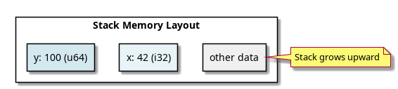
Rust provides fixed-size integers: i8, i16,
i32, i64, i128,
isize (signed) and u8, u16,
u32, u64, u128,
usize (unsigned).
| Type | Size | Layout |
|---|---|---|
i32 |
4 bytes | Binary two’s complement |
u64 |
8 bytes | Binary unsigned |
isize |
Platform | Points to values, 32-bit or 64-bit |
Example (Little-Endian x86-64):
let n: i32 = 258;
// Memory: [02 01 00 00] (little-endian)
// Bit pattern: 0x00000102f32 (IEEE 754 single precision, 4 bytes) and
f64 (IEEE 754 double precision, 8 bytes).
f64 layout:
┌─ Sign (1 bit)
│ ┌─ Exponent (11 bits)
│ │ ┌─ Mantissa (52 bits)
│ │ │
[S|EEEEEEEEEEE|MMMMMM...MMMMMM]let flag: bool = true; // 1 byte (not 1 bit—compiler aligns to byte)Under the hood: true is represented as
1, false as 0.
Tuples group values of potentially different types:
let pair: (i32, &str) = (42, "hello");Memory layout (x86-64):
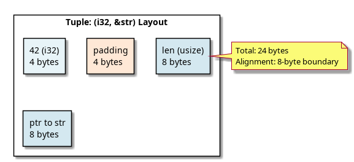
Fixed-size, homogeneous collections:
let arr: [i32; 3] = [1, 2, 3];Layout:
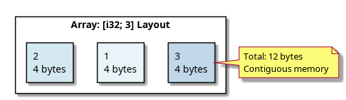
Arrays are zero-indexed and their size is
part of the type: [i32; 3] is a different
type from [i32; 5].
The Rust compiler uses Hindley-Milner type inference to deduce types when not explicitly annotated.
let x = 42; // Inferred: i32 (default)
let y = 3.14; // Inferred: f64 (default)
let z = vec![1, 2]; // Inferred: Vec<i32>Process: 1. Scan all type annotations in the scope
2. Analyze each expression to collect type constraints
3. Solve constraints using unification 4. If multiple
solutions exist, apply defaults (e.g., 42
→ i32)
let x: i64 = 42; // Overrides i32 default → i64Drop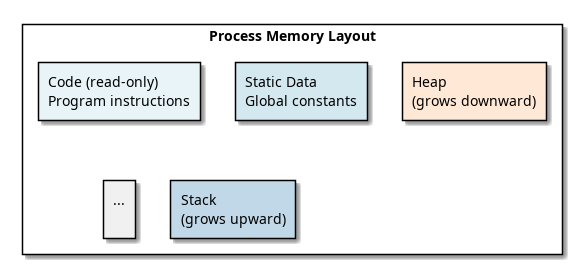
{
let x = 42; // Allocate on stack: x occupies 4 bytes
let y = x + 1; // Allocate y: 4 bytes
} // Scope ends: both x and y are dropped (cleaned up automatically)
// Stack space reclaimed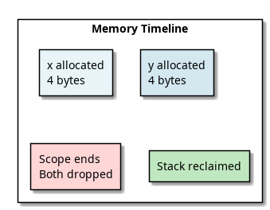
let x: u8 = 255;
let y = x + 1; // Behavior differs!| Mode | Behavior |
|---|---|
| Debug | Panics (checked arithmetic) |
| Release | Wraps silently (258 mod 256 = 2) |
To be explicit:
let wrapped = (255u8).wrapping_add(1); // 0
let saturated = (255u8).saturating_add(1); // 255
let overflow = (255u8).checked_add(1); // Some(0) or Nonetypetype UserID = u64;
let id: UserID = 123; // Same as u64, no newtype overheadDifference from struct: -
type is a compile-time alias (erased after
compilation) - struct creates a new type
at runtime (distinct for type safety)
Copy
TraitCopy?Copy is a marker trait for types that are safe
to duplicate via bitwise copy.
Types that implement Copy: - All
primitives: i32, u64, f64,
bool, char - Tuples of Copy
types: (i32, bool) - Arrays of Copy types:
[u32; 10]
Types that do NOT implement Copy: -
String (heap-allocated) - Vec<T>
(heap-allocated) - Box<T> (heap-allocated) - Custom
structs (unless all fields are Copy)
let x: i32 = 42;
let y = x; // x is Copy → bitwise copy occurs
// x is still valid! (both x and y have value 42)
let s = String::from("hello");
let t = s; // s is NOT Copy → move occurs
// s is now invalid! (ownership transferred to t)This is why primitives don’t have the “moved value” error—they’re
Copy!
Rust is NOT implicitly coercive for numeric types:
let x: i32 = 42;
let y: i64 = x; // ERROR: cannot assign i32 to i64
let y: i64 = x as i64; // OK: explicit castOnly coercion point is function arguments and
.into():
fn accept_i64(x: i64) {}
accept_i64(42_i32); // ERROR
accept_i64(42_i32.into()); // OK
accept_i64(42_i64); // OKconst:
Compile-time Constantsconst PI: f64 = 3.14159; // Inlined at compile time
const MAX_SIZE: usize = 1000;static: Global
Variablesstatic COUNTER: AtomicUsize = AtomicUsize::new(0);unsafe to
access)const| Concept | Under-the-Hood Fact |
|---|---|
| Primitives | Directly stored as bit patterns on stack |
| Alignment | Fields aligned to natural boundaries for CPU efficiency |
| Type Inference | Uses Hindley-Milner unification algorithm |
| Copy | Marker trait enabling bitwise duplication |
| No Coercion | Type system is strict; use as for explicit casts |
| Stack Layout | Scope exit → automatic cleanup via Drop |
Next: Memory Management → Learn ownership, moves, and the heap.
Rust’s memory safety guarantees come from a ownership
system enforced at compile-time. No garbage collector, no
manual malloc/free—just three simple rules
that prevent entire classes of bugs.
let x = String::from("hello"); // x owns the String
let y = x; // ownership moves to y
// x is now invalidMemory state after let y = x:
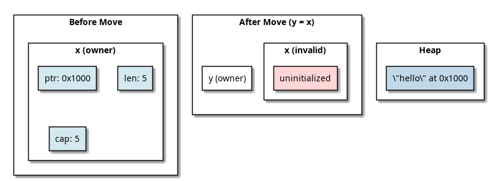
fn consume(s: String) { // takes ownership
println!("{}", s); // s is valid here
} // s is dropped here
let s = String::from("hello");
consume(s); // ownership moves into consume
// s is invalid here!{
let s = String::from("hello"); // s comes into scope
// s is valid here
} // s goes out of scope
// Drop::drop(&s) is called automatically
// Heap memory is freedA move transfers ownership by copying the stack data (pointer/length/capacity) but NOT duplicating the heap allocation.
let s1 = String::from("hello"); // Create on heap
let s2 = s1; // Move: copy 24 bytes on stackStack after move:
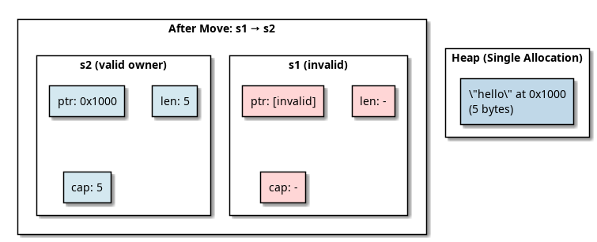
If we allowed both s1 and s2 to point to
the same heap memory:
let s1 = String::from("hello");
let s2 = s1;
drop(s1); // Frees heap memory
drop(s2); // Would free already-freed memory → Double-free bug!The compiler prevents this by invalidating the source after a move.
let x = 5; // i32 is Copy
let y = x; // x is still valid!
println!("{}", x); // OKWhy? Primitive types are Copy:
#[derive(Copy, Clone)]
pub struct MyInt(i32); // Copies entire value when movedWhen a type is Copy, assignment performs a
bitwise copy instead of a move.
Stack layout:
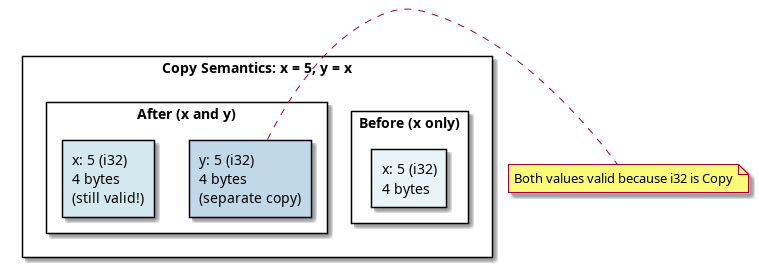
Every type can implement Drop:
impl Drop for String {
fn drop(&mut self) {
// Free heap memory
// Called automatically when goes out of scope
}
}The Rust Resource Acquisition Is Initialization (RAII)
pattern: - Acquire: Constructor allocates
resources - Use: Resource available in scope -
Release: Drop called at scope exit
{
let f = File::open("data.txt")?; // Acquire file handle
// Use file
} // f.drop() called → file handle closed
// No resource leak!For structs, fields are dropped in reverse declaration order:
struct Employee {
name: String, // Dropped last
id: u64, // Dropped first (Copy, no drop code)
}
let emp = Employee {
id: 42,
name: String::from("Alice")
};
// Dropping emp:
// 1. name.drop() → heap freed
// 2. id.drop() → no-op (i64 is Copy)&T)let s1 = String::from("hello");
let s2 = &s1; // Borrow: no ownership transfer
println!("{}", s1); // s1 still valid!
println!("{}", s2); // s2 is a reference to s1Memory:
s1 owns:
┌─────────────────┐
│ ptr: 0x1000 │ ──┐
│ len: 5 │ │
│ cap: 5 │ │
└─────────────────┘ │
│
s2 borrows: │
┌─────────────────┐ │
│ ref ptr: &s1 │ ──┤ (points to s1, not the heap directly)
└─────────────────┘ │
│
Heap: │
┌─────────────────┐ │
│ "hello" │ ◄─┘
└─────────────────┘→ See Borrowing & References for details.
let x = Box::new(42); // Allocate 42 on heapMemory layout:
Stack:
┌─────────────────┐
│ x (Box<i32>) │
│ ptr: 0x1000 │ ──┐
├─────────────────┤ │
│
Heap: │
┌────────┐ │
│ 42 │ ◄──────────┘
└────────┘When x goes out of scope: 1. Drop::drop(x)
is called 2. Heap memory is freed 3. The pointer is invalidated
Box size: 8 bytes (just a pointer on 64-bit systems).
fn process(s: String) { // Takes ownership
println!("{}", s);
} // s is dropped here
let my_string = String::from("hello");
process(my_string); // Ownership moves in
// my_string is now invalid!
process(my_string); // ERROR: value used after moveCall stack:
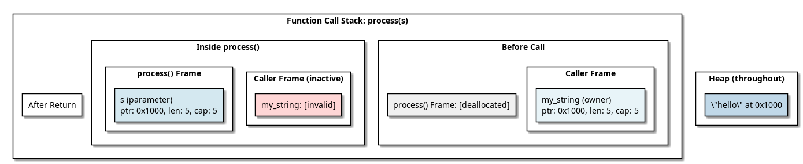
fn make_string() -> String {
let s = String::from("hello");
s // Ownership moves out
} // s is NOT dropped here (moved)
let s = make_string(); // Receive ownershiplet s1 = String::from("hello");
let s2 = s1.clone(); // Explicit deep copy
println!("{}", s1); // OK, s1 still owns original
println!("{}", s2); // OK, s2 owns the copyMemory after clone:
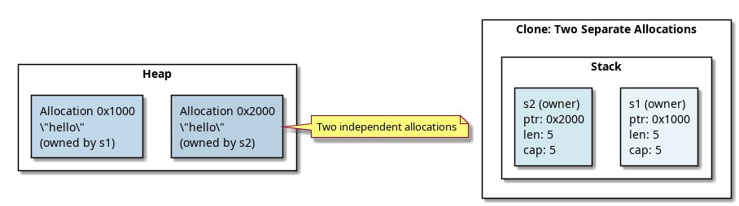
Performance implication: clone() is
expensive for large strings! Only use when you actually need two
copies.
Technically yes, but it’s hard:
use std::mem::forget;
let s = String::from("hello");
forget(s); // Memory leaked! (requires explicit `forget`)
// The compiler won't clean up sOr with circular references:
use std::rc::Rc;
use std::cell::RefCell;
let a = Rc::new(RefCell::new(5));
let b = Rc::clone(&a);
// Create cycle: a → b, b → a
// Reference count never reaches 0 → memory leakedWhy Rust allows this: Memory safety ≠ memory leak prevention. Rust prevents use-after-free and double-free, but can’t prevent all logical leaks.
→ See Smart Pointers for solutions
like Weak<T>.
// Move: O(1) - just copy pointer/len/cap
let s1 = String::from("hello");
let s2 = s1; // Cheap!
// Copy: O(1) - copy entire value
let x = 42i32;
let y = x; // Cheap! (4 bytes)
// Clone: O(n) - allocate + copy data
let s1 = String::from("hello");
let s2 = s1.clone(); // Expensive! (allocates new buffer)Rule of thumb: - Use move (default for non-Copy types) - Use Copy only for small, simple types - Use clone only when you need a real copy
fn build_message() {
let s1 = String::from("hello"); // Allocate: "hello"
let s2 = String::from(" "); // Allocate: " "
let s3 = String::from("world"); // Allocate: "world"
let mut result = s1; // Move: s1 → result
result.push_str(&s2); // Borrow s2, append
result.push_str(&s3); // Borrow s3, append
println!("{}", result); // "hello world"
} // All strings dropped here in reverse order
// Heap memory freed automaticallyStack evolution: 1. s1, s2, s3 allocated (3 strings) 2. result = s1 (s1 invalidated, result is new owner) 3. s2 borrowed for append 4. s3 borrowed for append 5. scope exit → result, s2, s3 dropped
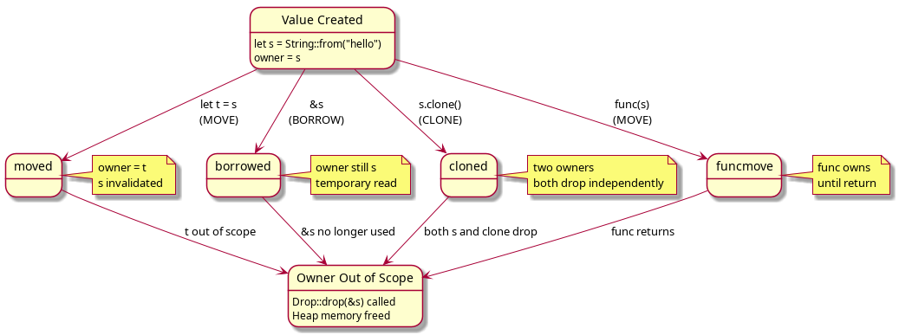
| Concept | Meaning | Performance |
|---|---|---|
| Move | Transfer ownership, invalidate source | O(1) - copy pointer |
| Copy | Bitwise duplication, both valid | O(1) - small values |
| Clone | Deep copy with new allocation | O(n) - expensive |
| Borrow | Temporary reference, owner unchanged | O(1) - just pointer |
| Drop | Automatic cleanup at scope exit | Depends on type |
Next: Borrowing & References → Learn the borrow checker rules.
The borrow checker is Rust’s compiler pass that prevents data races and use-after-free bugs by enforcing borrowing rules at compile-time. No runtime overhead—pure static analysis.
// Many immutable references: OK
let s = String::from("hello");
let r1 = &s;
let r2 = &s;
let r3 = &s;
println!("{}, {}, {}", r1, r2, r3);
// One mutable reference: OK
let mut s = String::from("hello");
let r = &mut s;
r.push_str(" world");
// Mixed: NOT OK
let mut s = String::from("hello");
let r1 = &s; // Immutable borrow
let r2 = &mut s; // ERROR: cannot borrow as mutablefn dangling() -> &String {
let s = String::from("hello");
&s // ERROR: returns reference to local variable
} // s is dropped hereThis would create a dangling pointer—the compiler prevents it at compile-time.
You cannot have multiple mutable references to the same data:
let mut s = String::from("hello");
let r1 = &mut s;
let r2 = &mut s; // ERROR: cannot borrow twice as mutable&T)&T
WorksAn immutable reference is a read-only pointer:
let x = 42;
let r = &x; // Reference to x
println!("{}", r); // Dereference and readMemory layout:
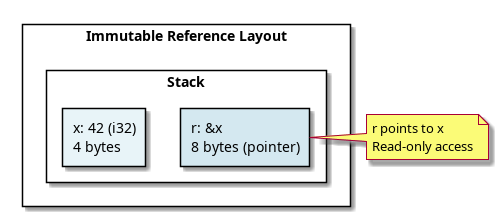
let s = String::from("hello");
let r1 = &s;
let r2 = &s;
let r3 = &s;
// All point to same data
println!("{} {} {}", r1, r2, r3);Why allow many? Multiple readers don’t conflict. The data is shared and immutable.
Stack layout:
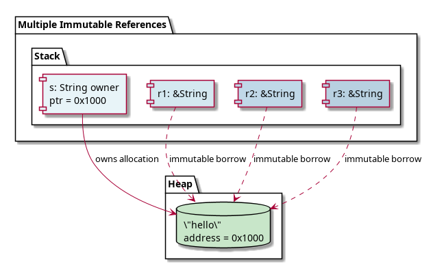
&mut T)&mut T
WorksA mutable reference is a read-write pointer with exclusive access:
let mut x = 42;
let r = &mut x;
*r = 100; // Dereference and write
println!("{}", x); // 100let mut s = String::from("hello");
let r1 = &mut s;
r1.push_str(" world");
let r2 = &mut s; // ERROR: cannot borrow as mutable while r1 existsWhy? If two mutable references existed simultaneously:
// Hypothetical (invalid) code:
let mut s = String::from("hello");
let r1 = &mut s;
let r2 = &mut s;
r1.push_str("!"); // r1 modifies data
r2.push_str("?"); // r2 also modifies data
// Which one wins? Race condition!The compiler prevents this at compile-time.
The borrow checker assigns each reference a lifetime (scope):
let x = 5; // 'static (or 'a if in function)
let r = &x; // Lifetime must be <= x's lifetime
println!("{}", r);Modern Rust uses Non-Lexical Lifetimes (Rust 2018+): a reference’s lifetime ends at its last use, not at scope end.
let mut x = 5;
let r1 = &x; // Borrow starts
println!("{}", r1); // Last use of r1
// r1's lifetime ends here!
let r2 = &mut x; // OK! r1 is no longer active
r2 = &mut x;Without NLL, this would error because r1 would live
until scope end.
Timeline:
Scope:
│ let mut x = 5;
│ │
│ │ let r1 = &x; ─── r1 lifetime starts
│ │ println!("{}", r1); r1's last use
│ │ ─── r1 lifetime ends (NLL)
│ │
│ │ let r2 = &mut x; ─── r2 lifetime starts (no conflict!)
│ │ r2 = &mut x; (still valid)
│ │ ─── r2 lifetime ends
│
└─ scope ends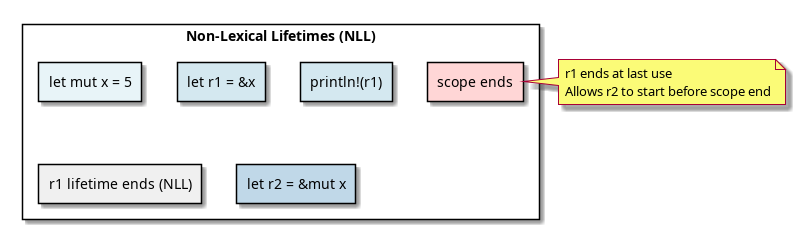
At any point in time, for any piece of data: - Either multiple immutable references exist - Or exactly one mutable reference exists - But not both
fn check_refs() {
let mut s = String::from("hello");
let r1 = &s; // Immutable borrow
let r2 = &s; // Immutable borrow (OK, same type)
println!("{} {}", r1, r2); // r1, r2 last used here
// Their lifetimes end
let r3 = &mut s; // Mutable borrow (OK, no other refs active)
r3.push_str("!");
}Borrow timeline:
r1 ──────┐
r2 ──────┤ (both immutable, OK)
│
r3 ─────────┐ (mutable, no conflict with r1/r2)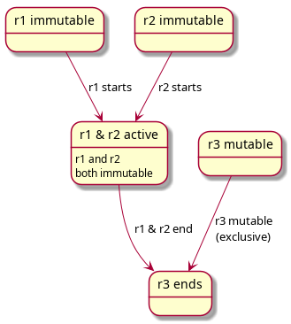
let mut s = String::from("hello");
let r1 = &mut s; // Mutable borrow
r1.push_str(" world");
let r2 = &s; // ERROR: cannot borrow as immutable
// (r1's mutable borrow still active)
println!("{} {}", r1, r2);Why? The mutable reference r1 has
exclusive access. No other references allowed.
let mut s = String::from("hello");
let r1 = &s; // Immutable borrow
println!("{}", r1); // Last use of r1
let r2 = &mut s; // ERROR (in older Rust, OK in NLL Rust 2018+)
r2.push_str("!");With NLL: Actually OK! Because r1 is no
longer used after the println.
The compiler automatically dereferences references in certain contexts:
let s = String::from("hello");
let r = &s;
// Manual dereference:
let len = (*r).len();
// Automatic deref coercion:
let len = r.len(); // Same thing!Compiler does this:
r.len()
→ (*r).len() (dereference)
→ (&s).len() (r points to s)
→ String::len(&s) (method call)fn takes_str(s: &str) {}
let s = String::from("hello");
takes_str(&s); // Manual: &String
takes_str(s.as_str()); // Explicit: &str
// Rust also does deref coercion:
takes_str(&s); // Deref: &String → &strWhen a function returns a reference, the compiler must verify the reference is valid:
fn first_word(s: &String) -> &str {
let words: Vec<&str> = s.split(' ').collect();
&words[0] // ERROR: returns reference to local variable!
}fn longest<'a>(x: &'a str, y: &'a str) -> &'a str {
if x.len() > y.len() { x } else { y }
}The lifetime 'a means: “the returned reference is valid
as long as both x and y are valid.”
Memory safety: If x or y
goes out of scope before the returned reference is used, the compiler
catches it.
→ See Lifetimes for deep dive.
| Type | Mutability | Quantity | Last Use Matters? |
|---|---|---|---|
&T |
No | Many | Yes (NLL) |
&mut T |
Yes | One | Yes (NLL) |
| Owned | (owned) | One | No |
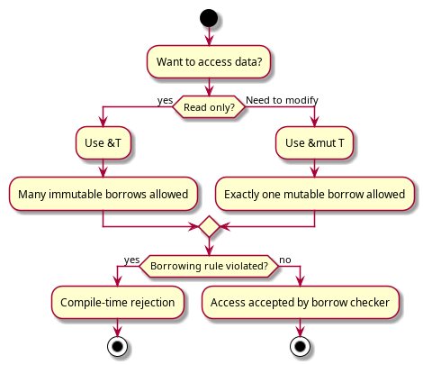
let x = 42;
// Immutable reference (4 scenarios)
let r1: &i32 = &x; // Type: &i32
let r2 = &x; // Same, inferred
// Mutable reference (requires x is mut)
let mut y = 42;
let r3: &mut i32 = &mut y; // Type: &mut i32
// Pointer in unsafe code
let ptr: *const i32 = &x; // Raw pointer (no safety!)
let mut_ptr: *mut i32 = &mut y; // Mutable raw pointer| Type | Safety | Exclusivity | Auto-deref |
|---|---|---|---|
&T |
✓ Checked | Multiple OK | ✓ Yes |
&mut T |
✓ Checked | Exclusive | ✓ Yes |
*const T |
✗ Unsafe | None | ✗ No |
*mut T |
✗ Unsafe | None | ✗ No |
fn append_exclamation(s: &mut String) {
s.push('!'); // Requires &mut for modification
}
fn greet(name: &str) { // Borrows, doesn't modify
println!("Hello, {}!", name);
}
let mut msg = String::from("hello");
greet(&msg); // Immutable borrow ✓
append_exclamation(&mut msg); // Mutable borrow ✓
greet(&msg); // Immutable borrow ✓Borrow timeline:
greet(&msg) ──┐
├─ (non-overlapping, all OK)
append_exclamation(&mut msg) ──┤
│
greet(&msg) ──┘&T): Read-only,
many allowed&mut T): Read-write,
exclusive accessNext: Functions & Execution → Understand the call stack.
Understanding how functions execute in Rust means knowing how the call stack grows, how parameters are passed, and how return values are handled—all with ownership semantics baked in.
The call stack is a LIFO (Last-In-First-Out) data structure that tracks stack frames—one for each active function call.
fn main() {
let x = 5;
add_one(x); // new frame pushed
// add_one frame popped
}
fn add_one(n: i32) -> i32 {
n + 1 // frame active while this executes
}Stack evolution:
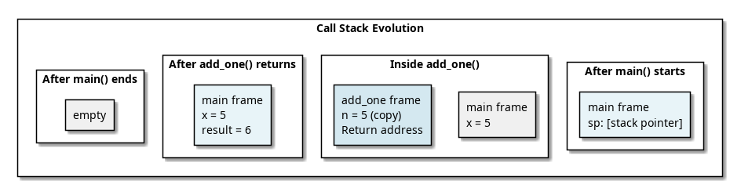
Each stack frame contains: 1. Local variables - allocated in order 2. Temporary values - intermediate computations 3. Return address - where to jump after function ends 4. Previous frame pointer (optional) - for debugging
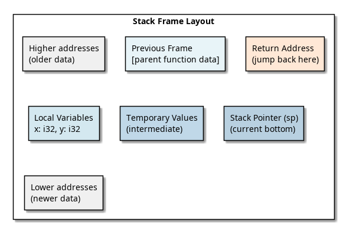
fn process_copy(x: i32) {
println!("{}", x);
} // i32 is Copy
fn process_move(s: String) {
println!("{}", s);
} // String is NOT Copy, ownership moves
let n = 42;
process_copy(n); // Copy: n still valid
let s = String::from("hello");
process_move(s); // Move: s is invalid after callParameter passing mechanism:
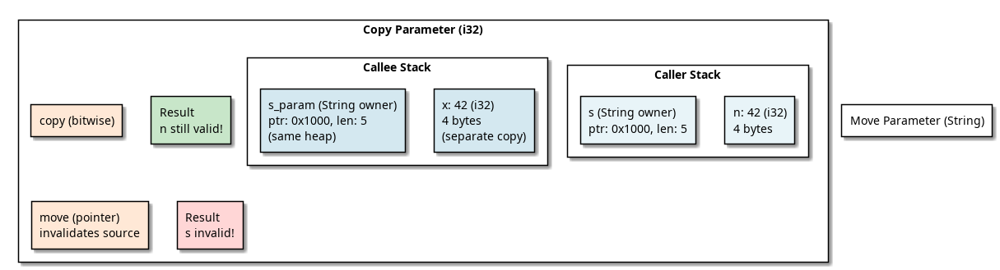
fn make_string() -> String {
let s = String::from("hello");
s // Ownership moves out
} // s is NOT dropped here (moved)
let result = make_string(); // Receive ownershipStack during return:
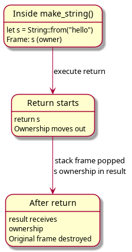
Modern Rust compilers apply Return Value Optimization:
fn expensive() -> String {
String::from("hello world")
}
let s = expensive(); // Compiler may avoid extra copyWith RVO (optimized):
1. Caller allocates space for return value
2. Callee builds String in that space
3. No move/copy neededWithout RVO (slower):
1. Callee creates String on own stack
2. Returns by moving
3. Caller receives ownership
4. Possible extra copyMost Rust code doesn’t see the difference—the compiler optimizes it.
A closure is a function that captures variables from its environment.
let x = 42;
let y = 10;
let add_x = |z: i32| {
x + y + z // Captures x and y
};
add_x(5); // 42 + 10 + 5 = 57The compiler translates a closure into a struct with
captured variables + FnOnce, FnMut, or
Fn trait:
// Original closure:
let add_x = |z| x + y + z;
// Compiler generates (approximately):
struct Closure {
x: i32, // captured by value
y: i32, // captured by value
}
impl Fn<(i32,)> for Closure {
extern "rust-call" fn call(&self, args: (i32,)) -> i32 {
self.x + self.y + args.0
}
}Memory layout:
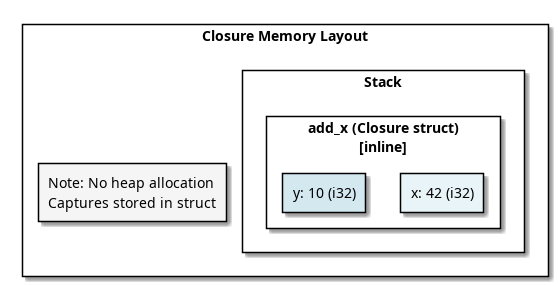
let x = 42;
// 1. Capture by immutable reference (&T)
let borrow = || println!("{}", x);
// 2. Capture by mutable reference (&mut T)
let mut y = 10;
let borrow_mut = || y += 1;
// 3. Capture by value (move)
let owned = move || { x + 1 }; // owns xTrait implementation based on captures:
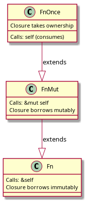
fn)fn add(a: i32, b: i32) -> i32 {
a + b
}
let f: fn(i32, i32) -> i32 = add; // Function pointer
f(3, 5); // Calls addSize and representation:
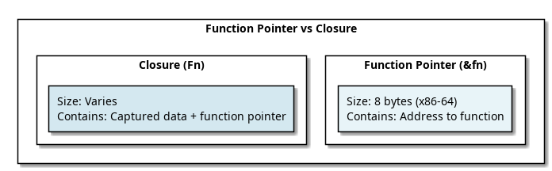
fn simple_fn(x: i32) -> i32 { x + 1 }
let fn_ptr: fn(i32) -> i32 = simple_fn;
println!("{}", std::mem::size_of_val(&fn_ptr)); // 8 bytes
let x = 10;
let closure = |y: i32| x + y;
println!("{}", std::mem::size_of_val(&closure)); // 4 bytes (just x)
let closure2 = |y: i32| simple_fn(y) + 1;
println!("{}", std::mem::size_of_val(&closure2)); // 0 bytes (no capture!)Rust does NOT guarantee tail call optimization, but the compiler may apply it.
fn factorial(n: u32, acc: u32) -> u32 {
if n == 0 {
acc
} else {
factorial(n - 1, acc * n) // Tail call
}
}Without TCO (new frame each call):
factorial(5, 1)
factorial(4, 5)
factorial(3, 20)
factorial(2, 60)
factorial(1, 120)
factorial(0, 120) ← returns
Stack depth: 6 framesWith TCO (frame reused):
Same function, same frame, just update registers
Stack depth: 1 frameCurrent Rust (1.75): TCO is not guaranteed. Use iterative code for guaranteed stack efficiency:
fn factorial_iter(n: u32) -> u32 {
(1..=n).product() // No recursion
}#[inline]
AttributeThe #[inline] attribute suggests the compiler substitute
the function body at the call site:
#[inline]
fn add_one(x: i32) -> i32 {
x + 1
}
let result = add_one(42);Without inline (with function call):
1. Push stack frame
2. Copy parameter
3. Execute function body
4. Pop stack frame
5. Return to callerWith inline (inlined):
1. Substitute: result = 42 + 1
2. No function call overhead#[inline] // Suggest inline (compiler decides)
#[inline(always)] // Force inline (rarely needed)
#[inline(never)] // Prevent inline
pub fn ...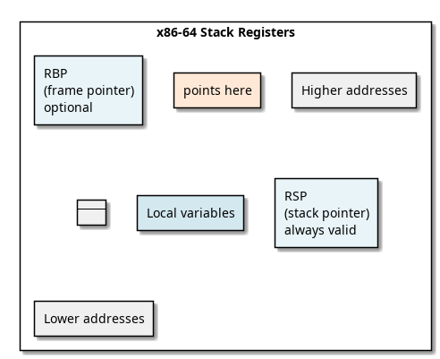
Modern Rust often omits RBP to save a register.
fn main() {
let x = 5;
let y = helper(x);
println!("{}", y);
}
fn helper(a: i32) -> i32 {
let b = a + 1;
process(b)
}
fn process(p: i32) -> i32 {
p * 2
}Stack evolution:
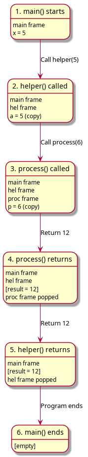
Stack allocation: O(1), just move RSP
Heap allocation: O(n), malloc + initialize
Stack access: Cache-friendly, predictable
Heap access: Pointer chase, potential cache miss
Stack: Automatic cleanup (scope exit)
Heap: Manual or via Drop traitRule of thumb: Use stack when possible, heap for large/dynamic data.
View the call stack during debugging:
use std::backtrace::Backtrace;
fn crash_here() {
let bt = Backtrace::capture();
println!("{}", bt); // Print full call stack
}Output shows: - Each function in the call chain - Memory addresses (useful for binary inspection) - Source line numbers (if debug info available)
| Concept | Mechanism |
|---|---|
| Call Stack | LIFO stack of frames tracking execution |
| Stack Frame | Contains locals, return address, temp values |
| Parameters | Copied (Copy types) or moved (non-Copy types) |
| Return Values | Moved to caller (RVO may optimize) |
| Closures | Compiled to structs with captured variables |
| Inlining | Optional optimization to avoid call overhead |
| Tail Calls | NOT guaranteed optimized in Rust |
Next: Lifetimes → Understand lifetime parameters and their enforcement.
Lifetimes are compile-time annotations that describe relationships between references. They don’t add runtime overhead—they’re purely for the compiler’s borrow checker.
A lifetime is a scope during which a reference is valid:
let x = 5;
{
let r = &x; // r is a reference with lifetime 'a
println!("{}", r); // r is valid here
} // r's lifetime ends
// r is invalid hereIn code:
fn borrow<'a>(x: &'a i32) -> &'a i32 {
x // Return with same lifetime as input
}The lifetime 'a means: “this reference is valid for the
duration of scope ’a”.
fn longest<'a>(x: &'a str, y: &'a str) -> &'a str {
if x.len() > y.len() { x } else { y }
}Meaning: - Input x has lifetime
'a - Input y has lifetime 'a -
Return value has lifetime 'a - Return is valid as long as
both x and y are valid
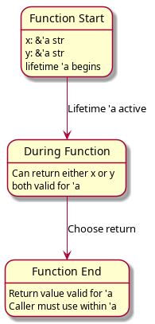
Rust automatically infers lifetimes in three cases:
// Rule 1: Single input reference
fn first_word(s: &str) -> &str {
// Elided: fn first_word<'a>(s: &'a str) -> &'a str
&s[..1]
}
// Rule 2: Self in methods
impl String {
fn as_str(&self) -> &str {
// Elided: fn as_str<'a>(&'a self) -> &'a str
self
}
}
// Rule 3: Multiple inputs but method with &self
impl Parser {
fn parse(&self, input: &str) -> &str {
// Elided: input borrows from self or from input
// Ambiguous! Requires annotation
}
}fn dangling() -> &String {
let s = String::from("hello");
&s // ERROR: s is dropped at function end
} // Lifetime mismatch: return lifetime > s lifetimeLifetime diagram:
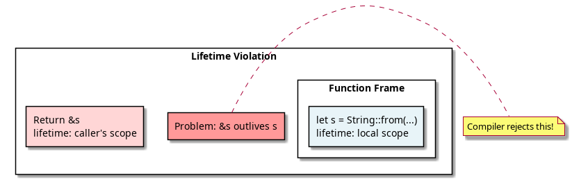
Fix: Return owned data or borrow valid data:
fn not_dangling() -> String {
String::from("hello") // Return owned value
}let mut s = String::from("hello");
let r = &s;
s.push_str(" world"); // ERROR: s mutated while borrowed
println!("{}", r);The borrow r has a lifetime that extends to the
println!. During that time, s cannot be
modified.
A longer lifetime is a subtype of a shorter lifetime:
let x = 5;
{
let r1: &'long i32 = &x; // Longer lifetime
{
let r2: &'short i32 = r1; // Can assign longer to shorter
println!("{}", r2);
}
}Lifetime hierarchy:
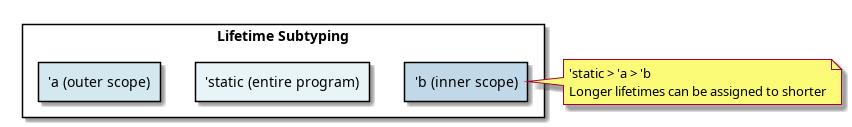
'static)'static?A 'static lifetime means the reference is valid for the
entire program duration.
const GREETING: &'static str = "Hello!"; // String literal
let s: &'static str = "world"; // String literals are 'static'staticlet x = 5;
let r: &'static i32 = &x; // ERROR: x's lifetime is not 'staticValid 'static examples:
// String literals
let s1: &'static str = "hello";
// Constants
const C: &'static str = "constant";
// Owned data that never drops
let s2: Box<&'static str> = Box::new("boxed");fn accepts_all_lifetimes<F>(f: F)
where
F: for<'a> Fn(&'a i32) -> &'a i32
{
// F works with ANY lifetime
}
// Valid:
let f = |x: &i32| x;
accepts_all_lifetimes(f);The for<'a> syntax means: “for all possible
lifetimes 'a”.
Lifetimes have variance properties (how they interact with subtyping):
// Covariant: longer lifetime can be used where shorter expected
let x = 5;
let r_long: &'long i32 = &x;
let r_short: &'short i32 = r_long; // OK
// Contravariant in function parameters
// Shorter lifetime can be used where longer expected
fn accepts_long<'a>(f: fn(&'a i32)) {}
fn accepts_short<'b>(f: fn(&'b i32)) {}
// This is complex—usually you don't need to think about it!struct Wrapper<'a> {
reference: &'a str,
}
// Lifetime bound: 'b outlives 'a ('b >= 'a)
fn use_wrapper<'a, 'b>(w: &'a Wrapper<'b>)
where
'b: 'a, // 'b must be at least as long as 'a
{
// Safe: w's reference is guaranteed valid for 'a
}Meaning of 'b: 'a: “lifetime ’b
outlives (is at least as long as) lifetime ’a”.
// No annotation needed:
fn takes_str(s: &str) {}
fn reference_self(&self) -> &str {}
// Pattern: Single input, single output
// Lifetime automatically connected!
fn process(data: &str) -> &str { data }
// Becomes: fn process<'a>(data: &'a str) -> &'a str// Multiple inputs: ambiguous
fn combine(x: &str, y: &str) -> &str {
// ERROR: which one to return? Which lifetime?
}
// Fix:
fn combine<'a>(x: &'a str, y: &'a str) -> &'a str {
// Return either x or y, both valid for 'a
if x.len() > y.len() { x } else { y }
}
// Or explicit for different lifetimes:
fn combine<'a, 'b>(x: &'a str, y: &'b str) -> &'a str {
// Can only return x (or owned data)
x
}struct Buffer {
data: Vec<u8>,
}
impl Buffer {
fn get_slice<'a>(&'a self) -> &'a [u8] {
// Lifetime bound to self's lifetime
// Reference valid as long as self exists
&self.data[..]
}
}
let buf = Buffer { data: vec![1, 2, 3] };
let slice = buf.get_slice(); // Reference bound to buf's lifetime
// If buf dropped here, slice would be invalid!struct Parser<'a> {
input: &'a str, // Parser borrows from input
}
impl<'a> Parser<'a> {
fn new(input: &'a str) -> Self {
Parser { input }
}
fn parse(&self) -> &'a str {
&self.input[..1] // Return borrows from self.input
}
}
let text = "hello";
let parser = Parser::new(text);
let result = parser.parse(); // Bound to text's lifetimeLifetimes prevent this class of bugs:
// INVALID (compiler rejects):
fn get_ref() -> &String {
let s = String::from("hello");
&s // ERROR: dangling reference
}
// VALID (compiler accepts):
fn get_owned() -> String {
String::from("hello") // Return owned data
}Why the error?
Return type &String requires lifetime >= function scope
But s's lifetime = local scope
Lifetime mismatch → compile error ✓Notation Meaning
──────── ─────────────────────────
&T Immutable reference, lifetime inferred
&'a T Immutable ref, lifetime 'a
&mut T Mutable reference, lifetime inferred
&'a mut T Mutable ref, lifetime 'a
'static Valid for entire program
for<'a> Works with all lifetimes
'a: 'b Lifetime 'a outlives 'b'static means valid for program
durationNext: Structs → Learn memory layout and alignment.
Understanding struct memory layout is crucial for optimization, FFI (Foreign Function Interface), and debugging. The Rust compiler uses field reordering and alignment rules to minimize space.
struct Point {
x: i32, // 4 bytes
y: i32, // 4 bytes
z: i32, // 4 bytes
}Memory layout (simple, aligned):
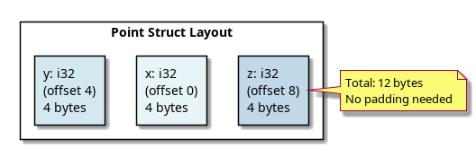
Each field stored sequentially, 12 bytes total.
CPU access is most efficient when data aligns to its natural
boundary: - u8 needs 1-byte alignment (any address) -
u16 needs 2-byte alignment (even addresses) -
u32 needs 4-byte alignment (multiples of 4) -
u64 needs 8-byte alignment (multiples of 8)
struct Mixed {
a: u8, // 1 byte, align 1
b: u32, // 4 bytes, align 4
c: u8, // 1 byte, align 1
}Without padding (WRONG):
Offset 0: a (u8, 1 byte)
Offset 1-3: ??? (b should be at offset 4!)
Offset 4-7: b (u32, 4 bytes)
Offset 8: c (u8, 1 byte)With padding (CORRECT):
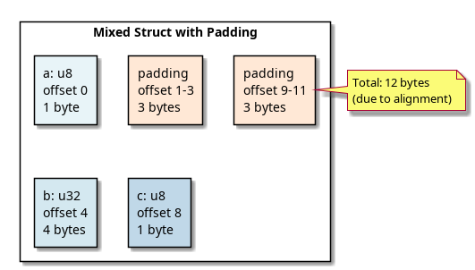
Compiler inserts 3 bytes padding after
a so b aligns to 4-byte boundary. Compiler
inserts 3 bytes padding after c for
alignment.
std::mem::size_of and std::mem::align_oflet point = Point { x: 1, y: 2, z: 3 };
println!("Size: {}", std::mem::size_of_val(&point)); // 12
println!("Alignment: {}", std::mem::align_of_val(&point)); // 4
let mixed = Mixed { a: 1, b: 2, c: 3 };
println!("Size: {}", std::mem::size_of_val(&mixed)); // 12
println!("Alignment: {}", std::mem::align_of_val(&mixed)); // 4struct Mixed {
a: u8, // align 1, size 1
b: u32, // align 4, size 4
c: u8, // align 1, size 1
}
Struct alignment: max(1, 4, 1) = 4
Offset 0: a (1 byte)
Offset 1-3: padding (3 bytes to align b to 4)
Offset 4-7: b (4 bytes)
Offset 8: c (1 byte)
Offset 9-11: padding (3 bytes, struct size must be multiple of alignment)
Final size: 12 bytes (multiple of 4)Declare fields in descending order of alignment to minimize padding:
// BAD (12 bytes with padding):
struct Inefficient {
a: u8, // 1 byte, align 1
b: u32, // 4 bytes, align 4 (needs padding before)
c: u8, // 1 byte, align 1 (needs padding after)
}
// GOOD (9 bytes, no padding):
struct Efficient {
b: u32, // 4 bytes, align 4
a: u8, // 1 byte, align 1
c: u8, // 1 byte, align 1
}Layout comparison:
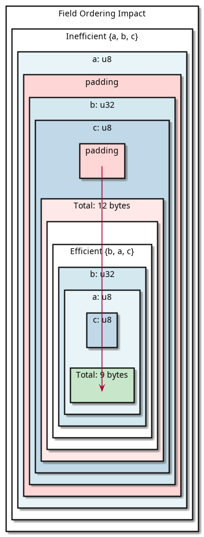
Savings: 3 bytes (25%) by reordering fields!
struct Marker; // Zero-sized type (ZST)
println!("{}", std::mem::size_of::<Marker>()); // 0Common ZSTs: - () (unit type) -
PhantomData<T> - Enums with only unit variants
Use case: ZSTs can be stored in collections with zero overhead:
struct Permissions; // ZST marker for permissions
// Vec<Permissions> has no actual data
let perms: Vec<Permissions> = Vec::new();
println!("Size: {}", std::mem::size_of_val(&perms)); // 24 (Vec overhead, not Permissions)Methods are zero-cost abstractions—they’re syntactic sugar:
impl Point {
fn x(&self) -> i32 {
self.x
}
fn move_by(&mut self, dx: i32, dy: i32) {
self.x += dx;
self.y += dy;
}
}
let mut p = Point { x: 1, y: 2, z: 3 };
p.move_by(10, 20);Compilation translates to:
Point::move_by(&mut p, 10, 20);Memory impact: NONE. Methods are free abstractions.
// Named fields
struct Point {
x: i32,
y: i32,
}
// Tuple struct (similar layout, less syntax)
struct Point2(i32, i32);
// Unit struct (zero-sized)
struct Marker;Layout: Same as named structs. Access via
.0, .1 instead of field names.
#[repr(Rust)]
(Default)The compiler may reorder fields for optimization:
#[repr(Rust)]
struct Data {
a: u8,
b: u32,
c: u8,
}
// Layout: May NOT be in declaration order!#[repr(C)] (C
Compatibility)Guarantees layout matches C structs (no reordering):
#[repr(C)]
struct CData {
a: u8, // offset 0
b: u32, // offset 4 (with padding)
c: u8, // offset 8
}Use case: FFI (Foreign Function Interface) with C libraries.
#[repr(transparent)]Guaranteed to have same layout as single field:
#[repr(transparent)]
struct UserId(u64);
// Has identical layout to u64struct Point {
x: i32,
y: i32,
}
struct Rect {
top_left: Point,
bottom_right: Point,
}Memory layout:
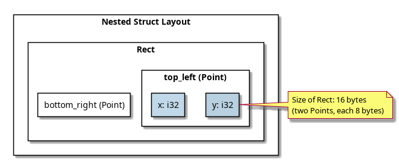
Nested structs flatten into parent struct’s layout—no additional overhead.
struct Pair<T> {
first: T,
second: T,
}
let pair_i32 = Pair { first: 1, second: 2 };
let pair_str = Pair { first: "a", second: "b" };Compilation:
Pair<i32> → struct with two i32 fields
Pair<&str> → struct with two &str fields (pointer + length)
Pair<String> → struct with two String fieldsEach generic specialization gets its own monomorphized type with appropriate layout.
struct A {
x: u8, // 1
y: u8, // 1
z: u8, // 1
}
// Size: 3 bytes, align: 1
struct B {
x: u8, // 1
_pad: [u8; 3], // 3 (manual padding)
y: u32, // 4
}
// Size: 8 bytes, align: 4
struct C {
x: u64, // 8
y: u32, // 4
z: u8, // 1
}
// Size: 16 bytes (3 bytes padding), align: 8
struct D {
x: Box<i32>, // 8 (pointer)
y: String, // 24 (pointer + len + cap)
z: u32, // 4
}
// Size: 40 bytes (depends on alignment), align: 8Modern CPUs access memory in cache lines (typically 64 bytes). Struct layout affects cache efficiency:
// BAD: Fields scattered across cache lines
struct Inefficient {
a: u64,
b: u8,
c: u64,
d: u8,
}
// GOOD: Related fields together
struct Efficient {
a: u64,
c: u64,
b: u8,
d: u8,
}The Efficient version packs related data in fewer cache
lines → better performance.
| Concept | Rule |
|---|---|
| Alignment | Fields align to their natural boundary (1, 2, 4, 8 bytes) |
| Padding | Compiler inserts padding to maintain alignment |
| Size | Total size must be multiple of struct’s alignment |
| Field Order | #[repr(Rust)] may reorder; #[repr(C)]
respects order |
| ZSTs | Zero-sized types have size 0 |
| Methods | Zero-cost abstraction, don’t affect memory layout |
| Generics | Monomorphized per type, each specialized separately |
Next: Enums → Learn discriminants and tag representation.
Enums in Rust are tagged unions (also called discriminated unions). Each enum variant is tagged with a discriminant, allowing the compiler to track which variant is active and enforce safe pattern matching.
enum Color {
Red,
Green,
Blue,
}Representation: - Each variant gets a
discriminant (an integer tag) - Red = 0,
Green = 1, Blue = 2 (assigned
automatically)
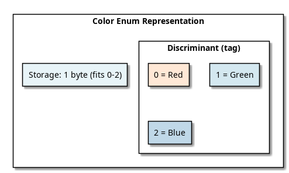
enum Status {
Pending = 0,
Running = 1,
Complete = 2,
}enum Result<T, E> {
Ok(T), // Variant with data
Err(E), // Variant with data
}Memory layout:
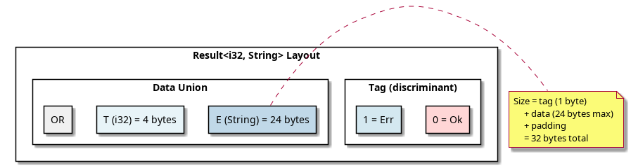
// Worst case: use largest variant
enum Result<i32, String> {
Ok(i32), // 4 bytes
Err(String), // 24 bytes (pointer + len + cap)
}
// Compiler allocates:
// - Discriminant: 1 byte (for 2 variants)
// - Padding: 7 bytes (alignment)
// - Data: 24 bytes (largest variant)
// Total: 32 bytesenum Direction {
North, // 0
South, // 1
East, // 2
West, // 3
}
println!("{}", Direction::North as u8); // 0enum HttpStatus {
Ok = 200,
NotFound = 404,
ServerError = 500,
}#[repr] for
Discriminant Type#[repr(u8)]
enum Small {
A, B, C // Uses u8 (1 byte)
}
#[repr(u32)]
enum Large {
X, Y, Z // Uses u32 (4 bytes)
}
println!("{}", std::mem::size_of::<Small>()); // 1
println!("{}", std::mem::size_of::<Large>()); // 4Rust is smart about reducing enum size when possible:
enum Option<T> {
Some(T),
None,
}
// Option<u32>: 8 bytes (not 5 or 9!)
println!("{}", std::mem::size_of::<Option<u32>>()); // 8
// WHY? u32 uses values 0..=4294967295
// Rust reserves one "niche" value (e.g., 0xFFFFFFFF) to represent None
// No separate discriminant needed!Memory layout:
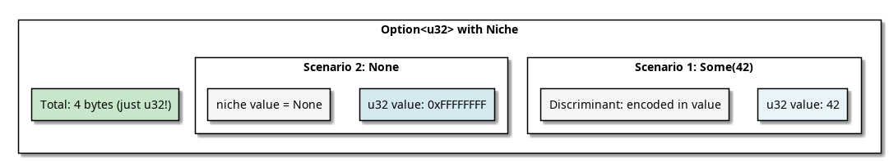
println!("{}", std::mem::size_of::<Option<u8>>()); // 1 (niche optimization)
println!("{}", std::mem::size_of::<Option<i32>>()); // 4 (niche optimization!)
println!("{}", std::mem::size_of::<Option<bool>>()); // 1 (u8 can fit tag + bool)
println!("{}", std::mem::size_of::<Option<String>>()); // 24 (String size unchanged)match result {
Ok(value) => println!("Value: {}", value),
Err(e) => println!("Error: {}", e),
}Compilation (conceptual):
match result {
Ok(value) => {
// Check discriminant == 0
let value = result.data; // Extract data
println!("Value: {}", value);
},
Err(e) => {
// Check discriminant == 1
let e = result.data; // Extract data
println!("Error: {}", e);
},
}The compiler ensures all variants are handled:
match result {
Ok(_) => {},
// ERROR: missing Err variant
}
match result {
Ok(_) => {},
Err(_) => {},
// OK: all variants handled
}Option<T>enum Option<T> {
Some(T),
None,
}
// Size: same as T (usually, with niche optimization)
let x: Option<i32> = Some(42); // 4 bytes
let y: Option<i32> = None; // 4 bytesResult<T, E>enum Result<T, E> {
Ok(T),
Err(E),
}
// Size: max(T, E) + overhead
let success: Result<i32, String> = Ok(42);
let error: Result<i32, String> = Err("failed".to_string());Memory:
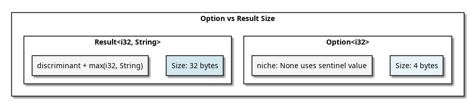
use std::mem::discriminant;
enum Color { Red, Green, Blue }
let red = Color::Red;
let green = Color::Green;
println!("{:?}", discriminant(&red)); // Discriminant { ... }
println!("{}", discriminant(&red) == discriminant(&green)); // false#[repr(u8)]
enum Direction {
North = 0,
South = 1,
}
unsafe {
println!("{}", std::mem::transmute::<Direction, u8>(Direction::North)); // 0
}#[repr(u8)]
for Small Enums#[repr(u8)] // Only 1 byte instead of default
enum Status {
Pending,
Running,
Complete,
}
println!("{}", std::mem::size_of::<Status>()); // 1// Larger:
enum Data {
Small(u64),
Large(Box<Vec<u8>>), // Pointer, not inline data
}
// This keeps Size(Data) small#[repr(C)])#[repr(C)]
enum Result {
Ok(u64), // 8 bytes
Err(u32), // 4 bytes (plus padding)
}enum Void {} // No variants at all
println!("{}", std::mem::size_of::<Void>()); // 0Cannot create values of type Void—used in type systems
for “impossible” cases.
match result {
Ok(n) if n > 0 => println!("Positive"),
Ok(_) => println!("Non-positive"),
Err(_) => println!("Error"),
}Compiler generates:
1. Extract discriminant
2. If Ok:
a. Extract value
b. Check guard (n > 0)
c. Execute arm if true
3. If Err: execute error arm#[non_exhaustive]
pub enum ApiResponse {
Success,
Failure,
}
// Users cannot match exhaustively (new variants might be added)
// Users must use _ catch-all
match resp {
ApiResponse::Success => {},
ApiResponse::Failure => {},
_ => {}, // Required for non-exhaustive enum
}enum Type Size (typical) Notes
──────────────────── ────────────── ─────────────
Void (no variants) 0 Uninhabited type
Unit (no data) 1 Just discriminant
Option<()> 1 Niche optimization
Option<bool> 1 Fits in one byte
Option<u32> 4 Niche optimization
Option<String> 24 or 32 Niche may not work
Result<u32, u32> 8 Discriminant + 4 bytes
Result<String, String> 48-56 Two 24-byte variantsTypically at the beginning of the enum:
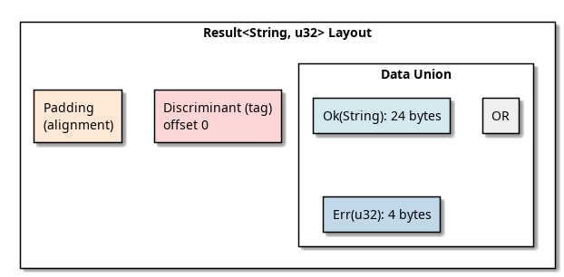
Sometimes Rust folds the discriminant into unused bits of data (niche optimization).
| Concept | Details |
|---|---|
| Discriminant | Tag integer identifying which variant is active |
| Size | max(variant_sizes) + tag overhead |
| Niche Optimization | Reuse unused values as variant markers (free tag!) |
| Pattern Matching | Exhaustiveness checking at compile-time |
| Option |
Usually same size as T (niche) |
| Result<T,E> | max(T, E) + tag overhead |
Next: Generics → Learn monomorphization and type specialization.
Monomorphization is the process where Rust’s compiler generates specialized versions of generic code for each concrete type. This enables zero-cost abstractions while maintaining type safety.
fn print_it<T: std::fmt::Debug>(val: T) {
println!("{:?}", val);
}
print_it(5i32);
print_it("hello");
print_it(3.14f64);At compile time, Rust generates:
// Specialized for i32
fn print_it_i32(val: i32) {
println!("{:?}", val);
}
// Specialized for &str
fn print_it_str(val: &str) {
println!("{:?}", val);
}
// Specialized for f64
fn print_it_f64(val: f64) {
println!("{:?}", val);
}
print_it_i32(5);
print_it_str("hello");
print_it_f64(3.14);Result: No runtime overhead—each call is direct, not through dynamic dispatch.
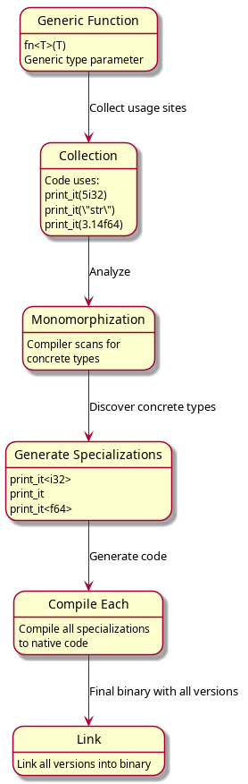
fn identity<T>(x: T) -> T {
x
}
let a = identity(42); // i32
let b = identity("hello"); // &str
let c = identity(vec![1, 2]); // Vec<i32>Monomorphized:
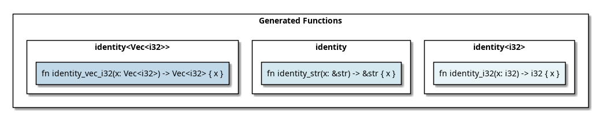
struct Pair<T> {
first: T,
second: T,
}
let pair_i32 = Pair { first: 1, second: 2 };
let pair_str = Pair { first: "a", second: "b" };Compiler generates:
// For i32
struct Pair_i32 {
first: i32,
second: i32,
}
// For &str
struct Pair_str {
first: &str,
second: &str,
}
// For String
struct Pair_String {
first: String,
second: String,
}Memory layouts differ: -
Pair<i32>: 8 bytes -
Pair<&str>: 16 bytes (2 pointers + 2 lengths) -
Pair<String>: 48 bytes (2 Strings, each 24 bytes)
impl<T> Pair<T> {
fn new(first: T, second: T) -> Self {
Pair { first, second }
}
fn first(&self) -> &T {
&self.first
}
}Monomorphized:
impl Pair_i32 {
fn new(first: i32, second: i32) -> Pair_i32 { ... }
fn first(&self) -> &i32 { ... }
}
impl Pair_str {
fn new(first: &str, second: &str) -> Pair_str { ... }
fn first(&self) -> &&str { ... }
}Each monomorphized type gets its own method implementations.
fn print_it<T: std::fmt::Debug>(x: T) {
println!("{:?}", x);
}
print_it(5); // Generate: print_it<i32>
print_it("hello"); // Generate: print_it<&str>Result: Two functions generated, each specialized.
fn print_it(x: &dyn std::fmt::Debug) {
println!("{:?}", x);
}
print_it(&5); // No specialization—virtual call
print_it(&"hello"); // No specialization—virtual callResult: One function generated, uses virtual function calls.
→ See Trait Objects for details.
fn generic_swap<T>(a: &mut T, b: &mut T) {
std::mem::swap(a, b);
}
// Used in thousands of places:
generic_swap(&mut x_i32, &mut y_i32);
generic_swap(&mut x_String, &mut y_String);
generic_swap(&mut x_Vec, &mut y_Vec);
// ... hundreds more types ...Result: Each usage generates new code.
Trade-off: - ✅ Benefit: Zero runtime overhead, specialization optimizations - ❌ Cost: Larger binary size (“code bloat”)
// Strategy 1: Move generic logic to non-generic function
fn swap_generic<T>(a: &mut T, b: &mut T) {
unsafe { std::ptr::swap(a, b); }
}
// Strategy 2: Share code via references (dynamic dispatch)
fn swap_dyn(a: &mut dyn Any, b: &mut dyn Any) {
// Slower, but single implementation
}
// Strategy 3: Only monomorphize public API
pub fn public_api<T: Serialize>(x: T) {
internal_generic(x) // Called by public API
}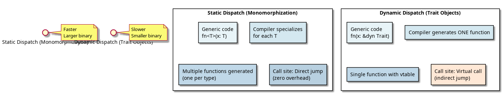
struct Result<T, E = String> {
value: T,
error: E,
}
Result<i32> // E defaults to String
Result<i32, String> // Explicit E
Result<i32, Box<dyn std::error::Error>>Each combination is monomorphized separately.
struct Array<T, const N: usize> {
data: [T; N],
}
let arr1: Array<i32, 5> = Array { data: [0; 5] };
let arr2: Array<i32, 10> = Array { data: [0; 10] };Monomorphization:
Array<i32, 5> → separate type
Array<i32, 10> → different type
Array<i32, 100> → yet another typeEach const value generates new specialization.
⚠️ Warning: Const generics can cause code explosion!
// General implementation
impl<T> MyTrait for T {}
// Specialized implementation (more specific)
impl MyTrait for i32 {}
// Rust chooses the most specific one
let x: i32 = ...;
// Uses specialized impl for i32, not generic implCompiler selection:
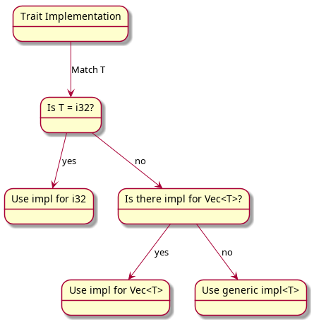
Generating specialized code for each type takes time:
Compile time = parsing + analysis + monomorphization + codegen + linking
More generic usage = More monomorphizations = Longer compile time// ❌ SLOW: Monomorphize everything
pub fn process<T: Serialize>(x: T) {
let json = serde_json::to_string(&x).unwrap();
println!("{}", json);
}
// ✅ FAST: Use dynamic dispatch for implementation
pub fn process<T: Serialize>(x: T) {
process_internal(&x as &dyn erased_serde::Serialize);
}
fn process_internal(x: &dyn erased_serde::Serialize) {
let json = serde_json::to_string(x).unwrap();
println!("{}", json);
}let v1: Vec<i32> = vec![1, 2, 3];
let v2: Vec<String> = vec!["a".to_string()];Monomorphized:
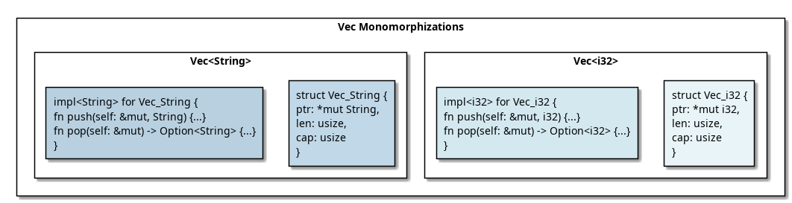
| Aspect | Details |
|---|---|
| Monomorphization | Compile-time specialization for each concrete type |
| Static Dispatch | Direct function calls, zero runtime overhead |
| Binary Size | Increases with more monomorphizations |
| Compile Time | Increases with more monomorphizations |
| Optimization | Each specialization can be optimized independently |
| vs Dynamic Dispatch | Faster (static) vs smaller binaries (dynamic) |
# See monomorphization instances
cargo +nightly -Z print-mono-items build 2>&1 | head -20
# Profile compilation
cargo build -Z timings
# Analyze binary size
cargo bloat --releaseNext: Trait System → Learn virtual tables and dynamic dispatch.
Traits are Rust’s answer to polymorphism. Understanding static vs dynamic dispatch and virtual tables is key to knowing when Rust code is zero-cost and when there’s overhead.
trait Animal {
fn speak(&self);
fn name(&self) -> &str;
}
struct Dog {
name: String,
}
impl Animal for Dog {
fn speak(&self) {
println!("Woof!");
}
fn name(&self) -> &str {
&self.name
}
}Compiler perspective: - Trait is a contract specifying methods - Impl block provides concrete implementation for type - Different types can implement same trait
fn make_sound<A: Animal>(animal: A) {
animal.speak();
}
let dog = Dog { name: "Rex".to_string() };
make_sound(dog); // Monomorphizes: make_sound::<Dog>Compilation:
// Compiler generates:
fn make_sound_Dog(animal: Dog) {
Animal::speak(&animal); // Direct call
}
make_sound_Dog(dog);Method call resolution (static dispatch):
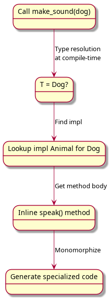
Result: Direct method call, zero runtime overhead.
dyn Trait)fn make_sound(animal: &dyn Animal) {
animal.speak();
}
let dog = Dog { name: "Rex".to_string() };
make_sound(&dog); // No monomorphization!Representation: A fat pointer containing: 1. Data pointer - points to actual object 2. Virtual table pointer - points to vtable
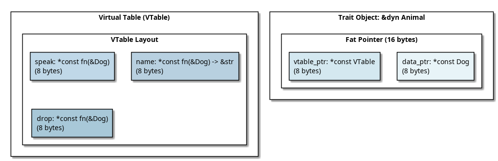
let animal: &dyn Animal = &dog;
animal.speak();Runtime execution:
1. Extract vtable_ptr from fat pointer
2. Look up speak method in vtable
3. Load function pointer
4. Call function: speak(data_ptr)Result: Indirect method call with vtable lookup overhead (~1-2 CPU cycles).
struct VTableForDogAsAnimal {
drop_in_place: fn(*mut Dog),
drop: fn(&Dog),
speak: fn(&Dog),
name: fn(&Dog) -> &str,
}Memory:
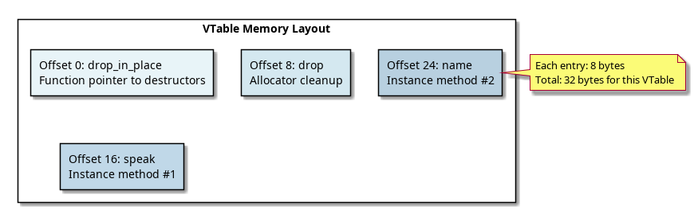
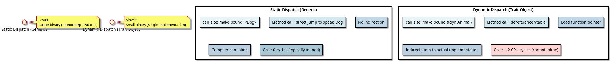
fn<T: Trait>)Use when: - Performance is critical - Type is known at compile-time - You can afford binary size increase
fn process<T: Debug>(item: T) { // Generic → static dispatch
println!("{:?}", item);
}
process(42); // Specialized version generated
process("hello"); // Different specialized version&dyn Trait)Use when: - You need runtime polymorphism - Binary size matters - Type is truly unknown at compile-time
fn process(item: &dyn Debug) { // Trait object → dynamic dispatch
println!("{:?}", item);
}
let items: Vec<&dyn Debug> = vec![&42, &"hello"]; // Mixed types!
for item in items {
process(item);
}let dog = Dog { name: "Rex".to_string() };
let animal: &dyn Animal = &dog;
// Layout:
// animal.data_ptr → points to dog instance
// animal.vtable_ptr → points to VTable for Dog impl of Animalprintln!("{}", std::mem::size_of::<&dyn Animal>()); // 16 (fat pointer)
println!("{}", std::mem::size_of::<Box<dyn Animal>>()); // 16
println!("{}", std::mem::size_of::<Rc<dyn Animal>>()); // 16All trait objects are 16 bytes on 64-bit systems (two 8-byte pointers).
A trait is object-safe if it can be used as a trait
object (&dyn Trait).
// Object-safe trait ✓
trait Drawable {
fn draw(&self);
}
// NOT object-safe ✗
trait Sized {
fn size_of_self() -> usize; // No &self → cannot be called on dyn
}
trait GenericTrait<T> { // Generic type param → not object-safe
fn process(&self, item: T);
}Why? At runtime, the actual type is erased. The
vtable cannot work with: - Methods taking Self by value
(size unknown) - Generic type parameters (too specific) - Class methods
with no receiver
// ✓ Object-safe methods:
fn take_ref(&self);
fn take_mut(&mut self);
fn boxed(self: Box<self>);
// ✗ NOT object-safe:
fn takes_self(self); // No size info
fn generic<T>(&self, t: T); // Generic type unknownAt most one impl per type:
trait Drawable {
fn draw(&self);
}
impl Drawable for String { /* A */ }
impl Drawable for String { /* B */ } // ERROR: conflicting implementationsRust enforces coherence: given a type, there’s exactly one applicable impl.
// OK: impl for concrete type
impl Drawable for String { }
// OK: impl for generic (doesn't overlap if specific impl exists)
impl<T> Drawable for Vec<T> { }
// ERROR: Overlapping
impl<T: Debug> Drawable for T { } // Too broad!
impl<T: Clone> Drawable for T { } // Conflicts!trait Container {
type Item; // Associated type (filled in by impl)
fn contains(&self, item: Self::Item) -> bool;
}
impl Container for Vec<String> {
type Item = String; // Concrete type
fn contains(&self, item: String) -> bool {
self.iter().any(|s| s == &item)
}
}Advantage: More flexible than generic type parameters.
// Generic type param version (less clear):
trait Container<T> {
fn contains(&self, item: T) -> bool;
}
// Associated type version (clearer intent):
trait Container {
type Item;
fn contains(&self, item: Self::Item) -> bool;
}trait Container {
type Item;
fn contains(&self, item: Self::Item) -> bool;
}
let v: Vec<Box<dyn Container>> = vec![]; // ERROR!
// Why? Item type is not known at runtime!Solution: Specify associated type
trait ContainerString: Container<Item = String> {}
let v: Vec<Box<dyn ContainerString>> = vec![]; // OKlet dog = Dog { name: "Rex".to_string() };
let animal: &dyn Animal = &dog;The VTable is typically emitted once per type in the binary (not duplicated).
trait Empty {}
println!("{}", std::mem::size_of::<&dyn Empty>()); // 16 (fat pointer)
// Even though Empty has no methods!The vtable still exists for drop and layout info.
// Static (inlined, fast)
fn static_call(animals: &[Dog; 1000]) {
for dog in animals {
dog.speak(); // Inlined
}
}
// Dynamic (vtable lookups, slow)
fn dynamic_call(animals: &[&dyn Animal]) {
for animal in animals {
animal.speak(); // vtable lookup + indirect call
}
}Performance ratio: Typically 1-5% overhead for dynamic dispatch (modern CPUs, good branch prediction).
fn process<T: Display + Debug + Clone>(item: T) {
println!("{:?}", item); // requires Debug
println!("{}", item); // requires Display
let copy = item.clone(); // requires Clone
}Type must satisfy all bounds simultaneously.
let item: &(dyn Display + Debug) = &42;Multiple vtables are generated (one per trait).
pub trait Public {
fn public_method(&self);
}
mod private {
pub trait Sealed {} // Not exported
}
impl<T: private::Sealed> Public for T {
fn public_method(&self) { }
}Only types implementing Sealed can implement
Public.
| Feature | Static | Dynamic |
|---|---|---|
| Declaration | fn<T: Trait> |
fn(&dyn Trait) |
| Binary Size | Large (monomorphized) | Small (single impl) |
| Performance | Fast (direct call) | Slower (vtable) |
| Inlining | Yes | No |
| Type Erasure | No | Yes |
| Fat Pointer | No | Yes (16 bytes) |
Next: Smart Pointers → Learn Box, Rc, Arc, and Weak.
Smart pointers are abstractions that own and manage heap memory. Each provides different semantics: exclusive ownership (Box), reference counting (Rc/Arc), and weak references (Weak).
Box is the simplest smart pointer: allocates on heap, one owner.
let b = Box::new(42); // Allocate i32 on heap
println!("{}", b); // Dereference implicitly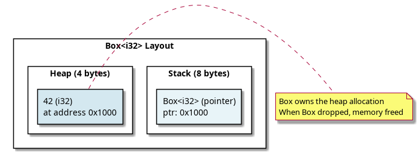
let x = 42;
let b = Box::new(x); // Move 42 to heap
drop(b); // Calls drop on Box
// Box deallocates heap memory
// x is still valid on stackprintln!("{}", std::mem::size_of::<Box<i32>>()); // 8 (just pointer)
println!("{}", std::mem::size_of::<Box<String>>()); // 8 (just pointer)Important: Box itself is tiny (8 bytes on 64-bit). The data is on the heap.
use std::rc::Rc;
let x = Rc::new(vec![1, 2, 3]); // Create rc'd vector
let y = Rc::clone(&x); // Increment reference count
let z = Rc::clone(&x); // Increment again
// x, y, z all point to same vector
// Vector freed when ALL rc's are dropped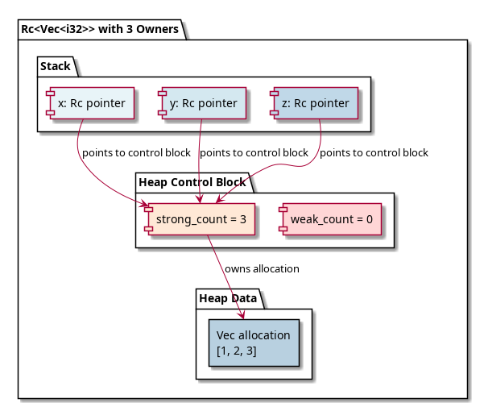
{
let x = Rc::new(42); // count = 1
{
let y = Rc::clone(&x); // count = 2
// y dropped: count = 2 → 1
}
// x dropped: count = 1 → 0
// Memory freed!
}let rc = Rc::new(42);
println!("{}", std::mem::size_of_val(&rc)); // 8 (pointer to control block)
// Control block contains: strong_count, weak_count, data (42)use std::sync::Arc;
use std::thread;
let data = Arc::new(vec![1, 2, 3]);
for i in 0..3 {
let data_clone = Arc::clone(&data);
thread::spawn(move || {
println!("{:?}", data_clone);
});
}
// All threads share same vector
// Vector freed when last thread finishes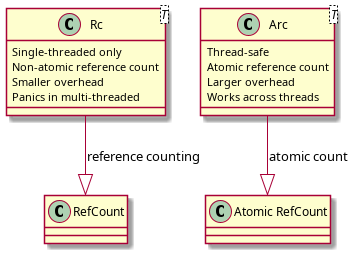
// Simplified internal structure
pub struct Arc<T> {
ptr: *const ArcInner<T>,
}
struct ArcInner<T> {
strong: AtomicUsize, // Atomic for thread-safety
weak: AtomicUsize,
data: T,
}The reference count uses AtomicUsize (atomic operation) for thread-safe increment/decrement.
use std::rc::Rc;
use std::cell::RefCell;
struct Node {
value: i32,
next: Option<Rc<Node>>,
prev: Option<Weak<Node>>, // Weak to prevent cycle
}
// Forward link: Rc (owns next node)
// Backward link: Weak (does NOT own previous node)
// When prev drops, node stays alive if someone owns it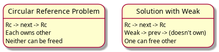
struct ArcInner<T> {
strong: AtomicUsize, // Rc/Arc references
weak: AtomicUsize, // Weak references
data: T,
}
// Data freed when: strong_count == 0
// Control block freed when: strong_count == 0 AND weak_count == 0let rc = Rc::new(42);
let weak = Rc::downgrade(&rc); // Create weak ref
if let Some(strong) = weak.upgrade() {
println!("{}", strong); // Can use it
} else {
println!("Value was dropped");
}// Stack allocation (fast, small)
let x = 42i32;
let y = x; // Copy
// Heap allocation (slower, large)
let b = Box::new(vec![1, 2, 3, 4, 5]);
let c = Box::clone(&b); // Different pointer, same dataStack: Allocation = move RSP (1 cycle)
Heap: Allocation = malloc/new (100+ cycles) + initializationUse Box when: - Type is too large for stack - Need dynamic sizing - Recursive types (must have indirection)
use std::rc::Rc;
use std::cell::RefCell;
let data = Rc::new(RefCell::new(vec![1, 2, 3]));
let clone1 = Rc::clone(&data);
let clone2 = Rc::clone(&data);
clone1.borrow_mut().push(4);
clone2.borrow_mut().push(5);
println!("{:?}", data.borrow()); // [1, 2, 3, 4, 5]println!("{}", std::mem::size_of::<Box<i32>>()); // 8
println!("{}", std::mem::size_of::<Rc<i32>>()); // 8
println!("{}", std::mem::size_of::<Arc<i32>>()); // 8
println!("{}", std::mem::size_of::<Weak<i32>>()); // 8
println!("{}", std::mem::size_of::<Option<Box<i32>>>()); // 8
println!("{}", std::mem::size_of::<Option<Rc<i32>>>()); // 8 (null = None)All smart pointers are 8 bytes on 64-bit systems (just a pointer).
impl<T> Deref for Box<T> {
type Target = T;
fn deref(&self) -> &T {
&**self // Double deref: *self (unbox) -> *T (pointer)
}
}
let b = Box::new(42);
println!("{}", *b); // Explicit deref
println!("{}", b.field); // Deref coercion (automatic)let b: Box<String> = Box::new("hello".to_string());
// These all work (deref coercion):
let len = b.len(); // Box<String> → String → str
let slice: &str = &*b; // Explicit deref
let slice: &str = &b; // Deref coercionstruct Builder {
data: Option<Box<Data>>,
}
impl Builder {
fn build(self) -> Result<Data, Error> {
self.data.ok_or(Error::Missing)
}
}let items: Vec<Box<dyn Trait>> = vec![
Box::new(TypeA {}),
Box::new(TypeB {}),
];When reference count reaches 0:
Rc<T>/Arc<T> lifecycle:
new() → count = 1
clone() → count ++
drop(clone) → count --
drop(last) → count = 0 → deallocate memory
Multiple references = Multiple owners
Last owner dropping = Memory freed| Pointer | Ownership | Thread-Safe | Overhead | Use Case |
|---|---|---|---|---|
| Box | Exclusive | N/A | 8 bytes | Heap allocation, dynamic sizing |
| Rc | Shared (single-thread) | No | 16+ bytes | Reference counting (single-thread) |
| Arc | Shared (multi-thread) | Yes | 24+ bytes | Reference counting (multi-thread) |
| Weak | Non-owning | Via Arc | 8 bytes | Break circular refs, weak refs |
Next: Interior Mutability → Cell, RefCell, Mutex explained.
Interior mutability is a pattern to allow mutation
through immutable references. Rust’s borrow checker operates at
compile-time; interior mutability shifts some checks to runtime. Three
main implementations: Cell
struct Person {
name: String,
age: u32,
}
impl Person {
// Cannot write this (compiler error: requires &mut self)
fn have_birthday(&self) {
self.age += 1; // ERROR: cannot assign through immutable reference
}
}Borrow checker says: “You have
&self (immutable), so you can’t mutate!”
struct Person {
name: String,
age: Cell<u32>, // Wrapped in Cell
}
impl Person {
fn have_birthday(&self) { // Still &self!
// Cell allows mutation through &
self.age.set(self.age.get() + 1);
}
}use std::cell::Cell;
let x = Cell::new(42);
x.set(100); // Mutable through &
let val = x.get(); // 100 (Copy trait required!)
println!("{}", val); // 100println!("{}", std::mem::size_of::<Cell<i32>>()); // 4 (same as i32)
println!("{}", std::mem::size_of::<Cell<String>>()); // ERROR: String not Copy!Cell restriction: Only Copy types
(primitives, small copyable structs).
// Allowed: Cell shares mutability
x.set(value); // Mutable operation
let val = x.get(); // Immutable operation
// NO borrow_mut() / borrow()
// NO runtime checks
// Copy requirement = no references into datastruct Node {
value: i32,
next: Option<Box<Node>>,
}
// Need mutable access to node inside Box through shared ref
// Cell<Option<Box<Node>>> won't work (Option not Copy)
// Solution: RefCell<Option<Box<Node>>>use std::cell::RefCell;
let x = RefCell::new(vec![1, 2, 3]);
// Immutable borrow
let borrow = x.borrow();
println!("{:?}", *borrow);
// Mutable borrow
let mut borrow_mut = x.borrow_mut();
borrow_mut.push(4);
drop(borrow_mut); // Release mutable borrow
// Can borrow again
let borrow2 = x.borrow();
println!("{:?}", *borrow2); // [1, 2, 3, 4]// Internal representation (simplified)
type BorrowFlag = isize;
const UNUSED: isize = 0; // No borrows
const WRITING: isize = -1; // Currently being mutably borrowed
const READING: isize = 1; // Reading (n readers = n)let x = RefCell::new(42);
{
let borrow = x.borrow(); // Immutable borrow guard
// borrow_flag incremented
println!("{}", *borrow); // Access via deref
// At end of scope: borrow_flag decremented
}
{
let mut borrow_mut = x.borrow_mut(); // Mutable borrow guard
// borrow_flag set to WRITING
*borrow_mut = 100;
// At end of scope: borrow_flag set back to UNUSED
}let x = RefCell::new(42);
let borrow1 = x.borrow(); // borrow_flag = 1
let borrow2 = x.borrow(); // borrow_flag = 2 (OK)
// PANIC! Tried to mutably borrow while already borrowed
// let borrow_mut = x.borrow_mut(); // Would check: borrow_flag == 0? NO → PANICimpl<T> RefCell<T> {
pub fn borrow_mut(&self) -> RefMut<T> {
match self.try_borrow_mut() {
Ok(r) => r,
Err(_) => panic!("already borrowed"), // Runtime panic!
}
}
pub fn try_borrow_mut(&self) -> Result<RefMut<T>, BorrowMutError> {
if self.borrow_flag.get() != 0 {
Err(BorrowMutError { /* ... */ })
} else {
self.borrow_flag.set(-1);
Ok(RefMut { /* ... */ })
}
}
}use std::rc::Rc;
use std::cell::RefCell;
let data = Rc::new(RefCell::new(vec![1, 2, 3]));
let clone1 = Rc::clone(&data);
let clone2 = Rc::clone(&data);
clone1.borrow_mut().push(4);
clone2.borrow_mut().push(5);
println!("{:?}", data.borrow()); // [1, 2, 3, 4, 5]use std::sync::Mutex;
use std::thread;
let data = Mutex::new(0);
thread::scope(|s| {
s.spawn(|| {
let mut guard = data.lock().unwrap();
*guard += 1;
});
s.spawn(|| {
let mut guard = data.lock().unwrap();
*guard += 1;
});
});
println!("{}", *data.lock().unwrap()); // 2 (thread-safe!){
let guard = mutex.lock()?; // Acquire lock
// borrow_flag checked
// OS acquires lock
*guard = value; // Modify protected data
// Guard dropped → lock released
// Platform semaphore notifies other threads
}Operation | Cell | RefCell | Mutex
get/set (Copy) | 1 ns | 50 ns | 100+ ns
borrow checking | None | 5 ns | 100+ ns
Memory footprint | Same | +4 bytes| +16+ bytesCell<T>:
- Primitives that you'll only get/set
- Zero overhead needed
- Example: cache busting counters
RefCell<T>:
- Shared mutable state in single thread
- Can handle panics gracefully with try_borrow
- Example: Rc<RefCell<Node>> for graphs
Mutex<T>:
- Multi-threaded shared state
- Need blocking semantics
- Example: Arc<Mutex<T>> for thread-safe counterstrait Cache {
fn get(&self, key: &str) -> Option<&Value>;
fn set(&self, key: String, value: Value); // &self!
}
struct MyCache {
cache: Cell<HashMap<String, Value>>,
}
impl Cache for MyCache {
fn get(&self, key: &str) -> Option<&Value> {
self.cache.borrow().get(key) // Borrow through &
}
fn set(&self, key: String, value: Value) {
self.cache.borrow_mut().insert(key, value);
}
}// Works: String not Copy, but copied via getter
Cell::new("hello".to_string())
// Clone required to extract
let s = cell.borrow().clone();
// Won't compile: can't get reference to interior
let _ref: &String = ???; // No way to get this safely!Why: Interior mutability without Copy would allow:
1. Get &T 2. Mutate through separate
&mut T 3. &T now pointing to modified
data!
use std::cell::RefCell;
struct Logger {
messages: RefCell<Vec<String>>,
}
impl Logger {
fn log(&self, msg: String) {
// Can mutate through &self!
self.messages.borrow_mut().push(msg);
}
}use std::cell::RefCell;
struct Lazy {
value: RefCell<Option<ExpensiveValue>>,
}
impl Lazy {
fn get(&self) -> &ExpensiveValue {
let mut v = self.value.borrow_mut();
if v.is_none() {
*v = Some(expensive_computation());
}
// Unsound! Can't return &T while RefMut alive
}
}| Type | Overhead | Thread-Safe | Panic Risk | Use Case |
|---|---|---|---|---|
| Cell | None | No | No | Copyable caches |
| RefCell | Low | No | Yes | Shared mutable state (single-thread) |
| Mutex | High | Yes | No | Shared mutable state (multi-thread) |
Next: Error Handling → Learn panic semantics and Result propagation.
Rust provides two error handling mechanisms: panic (unrecoverable, terminates task/thread) and Result<T,E> (recoverable, explicit handling). Understanding their under-the-hood implementation is key to writing robust code.
panic!("Something went wrong!"); // Immediate abort
// Function that may panic:
fn divide(a: i32, b: i32) -> i32 {
if b == 0 {
panic!("Division by zero!");
}
a / b
}fn level3() {
panic!("error!"); // Call panic
}
fn level2() {
let x = vec![1, 2, 3]; // Allocated
level3(); // Panics
// Drop x (called during unwind)
}
fn level1() {
let s = String::from("test"); // Allocated
level2();
// Drop s (called during unwind)
}
// Unwind sequence:
// 1. panic!() called in level3
// 2. level3 frame exits (no locals to drop)
// 3. level2 frame exits (drop x: vec freed)
// 4. level1 frame exits (drop s: string freed)
// 5. main frame exits (process terminates)pub enum Result<T, E> {
Ok(T),
Err(E),
}println!("{}", std::mem::size_of::<Result<i32, String>>()); // 32
println!("{}", std::mem::size_of::<Result<(), String>>()); // 24 (no Ok payload)
println!("{}", std::mem::size_of::<Result<i32, ()>>()); // 8 (niche optimization)pub enum Option<T> {
Some(T),
None,
}// Without niche optimization:
// Result<&T, ()> would be 16 bytes (pointer + tag)
// With niche optimization:
// Result<&T, ()> is 8 bytes (null = Err, non-null = Ok)
println!("{}", std::mem::size_of::<Result<&i32, ()>>()); // 8 (not 16!)Niche = unused discriminant value in the type itself
fn parse_config(s: &str) -> Result<Config, Error> {
let a = parse_a(s)?; // If Err, return immediately
let b = parse_b(s)?; // If Err, return immediately
let c = parse_c(s)?; // If Err, return immediately
Ok(Config { a, b, c }) // All succeeded
}// This:
let x = some_result?;
// Desugars to:
let x = match some_result {
Ok(val) => val,
Err(err) => return Err(err),
};fn example() -> Result<(), CustomError> {
let _file = std::fs::File::open("test.txt")?; // IoError → CustomError (via From)
Ok(())
}
// ? performs .into() conversion:
// IoError → CustomError (if impl From<IoError> for CustomError)// Cargo.toml
[profile.release]
panic = "unwind" // Stack unwinding
// If panic occurs:
// 1. Unwind stack
// 2. Call drop() on all locals
// 3. Terminate// Cargo.toml
[profile.release]
panic = "abort" // Immediate termination
// If panic occurs:
// 1. Immediately crash
// 2. No unwinding
// 3. Faster, smaller binaryPerformance trade-off: - Unwind: Slower (cleanup code), larger binary - Abort: Faster, smaller binary, but no cleanup
use std::panic;
let result = panic::catch_unwind(|| {
// Code that might panic
let x = 42 / 0; // Would panic
});
match result {
Ok(val) => println!("Success: {}", val),
Err(_) => println!("Caught panic!"),
}use std::thread;
let handle = thread::spawn(|| {
panic!("error in thread");
});
// Main thread continues
match handle.join() {
Ok(_) => println!("Thread succeeded"),
Err(_) => println!("Thread panicked"),
}pub trait Error: Debug + Display {
fn source(&self) -> Option<&(dyn Error + 'static)> {
None
}
}impl From<std::io::Error> for MyError {
fn from(e: std::io::Error) -> Self {
MyError::Io(e)
}
}
// ? operator uses this:
let file = std::fs::File::open("test.txt")?; // IoError auto-converted// Acceptable panics:
assert!(condition); // Assertions in tests
unwrap(); // "I know this is safe"
expect("message"); // Documented assumption
panic!("unreachable"); // Genuinely impossible state
// In library code: rarely panic
// In application code: more acceptable// Operations that might reasonably fail:
fn parse(s: &str) -> Result<Config, ParseError> { ... }
fn open_file(path: &str) -> Result<File, IoError> { ... }
fn fetch_data(url: &str) -> Result<Data, NetworkError> { ... }fn api_function(x: &str) -> i32 {
// Internal: can panic for assertions
assert!(!x.is_empty(), "x must be non-empty");
// Or return Result for recoverable errors
let val: i32 = x.parse()?;
Ok(val)
}use std::panic;
panic::set_hook(Box::new(|panic_info| {
println!("Panic occurred: {}", panic_info);
if let Some(location) = panic_info.location() {
println!("At {}:{}", location.file(), location.line());
}
}));
panic!("Custom panic!");fn my_function() {
panic!("here!"); // Line 5, Column 5
// Location stored in binary (requires debug info)
}// Result<T, E> has minimal overhead:
fn operation() -> Result<i32, Error> {
let result = some_computation();
if result < 0 {
Err(NegativeError)
} else {
Ok(result)
}
}
// Compiles to simple conditional + return
// No allocation, no exception handling (except panics)Panic (abort): 0 cycles (process exits immediately)
Panic (unwind): 100+ cycles (unwind stack, drop locals)let result: Result<i32, &str> = Ok(10);
// Transform value
result.map(|x| x * 2); // Ok(20)
// Chain operations
result.and_then(|x| Ok(x * 2)); // Ok(20)
// Provide default
result.unwrap_or(0); // 10
result.unwrap_or_else(|_| 0); // 10fn validate_all(data: &Data) -> Result<(), Vec<Error>> {
let mut errors = Vec::new();
if !valid_a(&data.a) {
errors.push(Error::A);
}
if !valid_b(&data.b) {
errors.push(Error::B);
}
if errors.is_empty() {
Ok(())
} else {
Err(errors)
}
}| Aspect | Panic | Result |
|---|---|---|
| Recovery | No (terminates) | Yes (explicit) |
| Type | Unwind token | Enum (Ok/Err) |
| Overhead | Unwind cost | None (zero-cost) |
| When | Invariants violated | Expected failures |
| Propagation | Stack unwind | ? operator |
Next: Pattern Matching → Learn match compilation and exhaustiveness checking.
Pattern matching is a first-class feature in Rust. The compiler
transforms match expressions into efficient jump
tables or decision trees, ensuring
exhaustiveness at compile-time while generating optimal
machine code.
let x = 2;
match x {
1 => println!("one"),
2 => println!("two"),
3 => println!("three"),
_ => println!("other"),
}The compiler chooses between: 1. Jump table - O(1) dispatch (for small integer ranges) 2. Decision tree - O(log n) comparisons (for sparse ranges) 3. Direct comparison - O(n) comparisons (for small match arms)
enum Color {
Red,
Green,
Blue,
}
match color {
Color::Red => ...,
Color::Green => ...,
Color::Blue => ...,
}// Internal representation (simplified):
enum Color {
Red = 0, // discriminant 0
Green = 1, // discriminant 1
Blue = 2, // discriminant 2
}
// Compiler reads discriminant from memory
// Jumps to corresponding armmatch result {
Ok(val) => process(val), // discriminant 0
Err(e) => handle_error(e), // discriminant 1
}Discriminants stored inline in the enum data.
struct Point {
x: i32,
y: i32,
}
match point {
Point { x: 0, y: 0 } => println!("origin"),
Point { x: 0, y } => println!("y-axis: {}", y),
Point { x, y } => println!("({}, {})", x, y),
}match x {
n if n % 2 == 0 => println!("even"),
n if n > 10 => println!("odd and > 10"),
_ => println!("other"),
}Jump to discriminant arm (if simple enum)
↓
Evaluate guard condition
↓
If true: execute arm
If false: continue to next arm (or default)let x: Option<i32> = Some(42);
// ERROR: match not exhaustive
match x {
Some(n) => println!("{}", n),
// Missing: None case
}
// FIXED: handle all cases
match x {
Some(n) => println!("{}", n),
None => println!("no value"),
}// Compiler builds a decision tree:
// 1. All possible values? → all branches covered
// 2. Missing case? → compiler error
match (x, y) {
(0, 0) => {},
(0, _) => {},
(_, 0) => {},
(_, _) => {},
}
// All combinations covered ✓
match (x, y) {
(0, 0) => {},
(0, _) => {},
// Missing: (non-0, 0) and (non-0, non-0) → ERROR
}enum Infallible {} // No variants
match infallible {
// Exhaustive (no cases possible)
}match x {
1 => println!("one"),
_ => println!("other"),
1 => println!("never reached!"), // ERROR: unreachable pattern
}match x {
0 => a(),
1 => b(),
2 => c(),
_ => d(),
}Compiled to: - Jump table lookup: O(1) - Branch prediction friendly - CPU cache efficient
if x == 0 {
a()
} else if x == 1 {
b()
} else if x == 2 {
c()
} else {
d()
}Compiled to: - Multiple comparisons: O(n) worst case - Branch prediction less friendly - Slower on average
Result: Match is typically faster.
match arr {
[] => println!("empty"),
[a] => println!("single: {}", a),
[a, b] => println!("pair: {} {}", a, b),
[a, .., b] => println!("first and last: {} {}", a, b),
_ => println!("many"),
}1. Check array length
2. Jump to corresponding arm
3. Extract pattern bindingsmatch x {
1 | 2 | 3 => println!("1-3"),
4..=6 => println!("4-6"),
_ => println!("other"),
}Or patterns merged into single jump table entry:
table[1] = arm1_handler
table[2] = arm1_handler (same as 1)
table[3] = arm1_handler (same as 1)
table[4..=6] = arm2_handlermatch result {
Ok(value) => println!("{}", value), // value moved from Ok
Err(e) => println!("error: {}", e), // e moved from Err
}
// result consumed (moved)match &result { // Match reference
Ok(value) => println!("{}", value), // value is &T
Err(e) => println!("error: {}", e), // e is &E
}
// result NOT consumedmatch &mut result {
Ok(value) => *value += 1, // Can mutate through &mut
Err(_) => {},
}match point {
Point { x: Point { x: 0, y: 0 }, y: 0 } => ...,
Point { x, y: 0 } if x > 0 => ...,
_ => ...,
}let value = match x {
1 => "one",
2 => "two",
_ => "other",
};
// All arms must return same type
// Type checked at compile timelet result = match config {
Config::A => {
println!("Running A");
expensive_operation_a()
},
Config::B => {
println!("Running B");
expensive_operation_b()
},
};Given match arms:
1. Build set of all possible values (type)
2. Subtract covered patterns (union of all arms)
3. If remainder non-empty → ERROR: non-exhaustive
4. If remainder empty → OK: exhaustiveenum Result<T, E> {
Ok(T), // variant 0
Err(E), // variant 1
}
match result {
Ok(v) => ..., // covers variant 0
Err(e) => ..., // covers variant 1
}
// All variants covered ✓Jump table dispatch: 1-2 CPU cycles
Decision tree dispatch: 2-5 CPU cycles (depending on depth)
If-else chain: 1-10 CPU cycles (branch mispredictions)// With -O (release):
match x {
0..=10 => cmp + jmp table // 1 instruction
_ => jmp default
}
// Naive if-else:
if x == 0 { ... }
else if x == 1 { ... }
...
// 20 instructions for 10 comparisonsNext: Trait Objects → Learn polymorphism, fat pointers, and casting.
Trait objects enable runtime polymorphism through dynamic dispatch. Implemented as fat pointers (data pointer + virtual table pointer), they allow calling methods on unknown concrete types.
fn process<T: Drawable>(item: T) {
item.draw(); // Resolved at compile time
}
process(circle); // Generates code for Circle::draw
process(square); // Generates code for Square::drawResult: Separate function for each type (monomorphization).
fn process(item: &dyn Drawable) {
item.draw(); // Resolved at runtime via vtable
}
process(&circle); // Same function for all types
process(&square); // Looks up method in vtableResult: Single function, method lookup via pointer.
trait Animal {
fn speak(&self);
}
impl Animal for Dog {
fn speak(&self) { println!("Woof!"); }
}
impl Animal for Cat {
fn speak(&self) { println!("Meow!"); }
}
let dog: Box<dyn Animal> = Box::new(Dog); // Type erased
let cat: &dyn Animal = &Cat; // Type erasedlet animals: Vec<Box<dyn Animal>> = vec![
Box::new(Dog),
Box::new(Cat),
];
for animal in animals {
animal.speak(); // Dispatches to correct implementation
}println!("{}", std::mem::size_of::<Box<dyn Animal>>()); // 16 bytes
println!("{}", std::mem::size_of::<&dyn Animal>()); // 16 bytes
// Compare:
println!("{}", std::mem::size_of::<Box<Dog>>()); // 8 bytes
println!("{}", std::mem::size_of::<&Dog>()); // 8 bytes// For Dog implementing Animal:
const DOG_VTABLE: &VTable = &VTable {
drop_glue: <Dog as Drop>::drop,
size: std::mem::size_of::<Dog>(),
align: std::mem::align_of::<Dog>(),
speak: <Dog as Animal>::speak,
};
// For Cat implementing Animal:
const CAT_VTABLE: &VTable = &VTable {
drop_glue: <Cat as Drop>::drop,
size: std::mem::size_of::<Cat>(),
align: std::mem::align_of::<Cat>(),
speak: <Cat as Animal>::speak,
};let animal: &dyn Animal = &dog;
animal.speak();; Load trait object (16 bytes)
mov rax, [trait_obj] ; rax = data_ptr
mov rcx, [trait_obj + 8] ; rcx = vtable_ptr
; Call method
mov r11, [rcx + 24] ; r11 = vtable.speak (offset 24)
call r11 ; Call speak(&dog_instance)// Object-safe trait: ✓
trait Animal {
fn speak(&self);
}
// NOT object-safe: ✗ (returns Self)
trait Cloneable {
fn clone(&self) -> Self; // ERROR: can't return dyn Trait
}
// NOT object-safe: ✗ (takes Self)
trait Movable {
fn move_it(self); // ERROR: can't consume dyn Trait
}// This would be impossible:
let animal: &dyn Animal = &dog;
let cloned = animal.clone(); // What type is cloned?
// We don't know!Trait object requires: all methods can work on
&dyn Trait (or &mut).
let dog: Dog = Dog;
let animal: &dyn Animal = &dog; // Upcast (always safe)use std::any::Any;
let animal: &dyn Any = &dog;
if let Some(dog) = animal.downcast_ref::<Dog>() {
println!("It's a dog!");
}Static dispatch (inline):
call Dog::speak
(function address known, CPU can inline)
Dynamic dispatch (vtable):
mov rax, [vtable] ; Load vtable
mov rcx, [rax + offset] ; Load method pointer
call rcx ; Indirect call (1-2 cycle penalty)Cost: 1-2 CPU cycles per method call (cache misses possible).
Direct call: 1 ns
Virtual call: 3-5 ns (3-5× overhead for small methods)trait Container {
type Item;
fn get(&self) -> Self::Item;
}
// Can't create trait object (Item type unknown)
let c: Box<dyn Container> = Box::new(...); // ERRORReason: Associated type must be concrete, but type erased.
let animal: Box<dyn Animal> = Box::new(Dog);
// Box owns Dog
// When Box dropped, Dog dropped
drop(animal); // Dog cleaned up via drop_gluelet dog = Dog;
let animal: &dyn Animal = &dog;
// &dyn Animal doesn't own Dog
// Dog must live longer than reference// VTable contains:
struct VTable {
drop_fn: unsafe fn(*mut ()), // Drop implementation
size: usize, // Size of concrete type
align: usize, // Alignment
// Method pointers (in declaration order)
method1: unsafe fn(*const ()),
method2: unsafe fn(*const (), i32),
// ... more methods
}trait A { fn a(&self); }
trait B { fn b(&self); }
impl A for Dog { fn a(&self) { ... } }
impl B for Dog { fn b(&self) { ... } }
let a: &dyn A = &dog; // VTable for A
let b: &dyn B = &dog; // VTable for B (different)
// Two different trait objects for same Dog!trait Animal: Drawable + Named {
fn speak(&self);
}
impl Animal for Dog {
fn speak(&self) { println!("Woof"); }
}
// Dog must implement Drawable + Named too
let animal: &dyn Animal = &dog; // VTable includes methods from Drawable, Namedfn process(item: &(dyn Animal + Send + Sync)) {
// Can call Animal methods
// Guaranteed to be Send + Sync
}trait Command {
fn execute(&mut self);
}
struct Commands(Vec<Box<dyn Command>>);
impl Commands {
fn run(&mut self) {
for cmd in &mut self.0 {
cmd.execute(); // Dispatch through vtable
}
}
}| Aspect | Trait Object | Generic |
|---|---|---|
| Dispatch | Dynamic (runtime) | Static (compile-time) |
| Fat Pointer | 16 bytes (ptr + vtable) | N/A |
| Type Erasure | Yes | No |
| Code Size | Smaller | Larger (monomorphization) |
| Speed | Slightly slower | Faster (inlining) |
| Object Safety | Required | N/A |
Next: Concurrency & Threading → Learn threads, channels, atomics, memory ordering.
async/await is syntactic sugar for state
machines. The compiler transforms async functions into types
implementing the Future trait. Understanding this
transformation is key to knowing why async is zero-cost and how it
enables high-concurrency.
A Future is a value that will eventually produce a result:
pub trait Future {
type Output;
fn poll(mut self: Pin<&mut Self>, cx: &mut Context<'_>) -> Poll<Self::Output>;
}
pub enum Poll<T> {
Ready(T),
Pending,
}Semantics: - poll() - tries to make progress toward completion - Poll::Ready(T) - computation completed, here’s the result - Poll::Pending - not ready yet, call poll() again later
async fn fetch_data() -> String {
let data = get_from_network().await;
process(data).await
}The compiler transforms the above into:
Generated state machine (conceptual):
enum FetchDataFuture {
Start,
AwaitingNetwork {
future: GetFromNetworkFuture,
},
Processing {
data: String,
future: ProcessFuture,
},
Done,
}
impl Future for FetchDataFuture {
type Output = String;
fn poll(mut self: Pin<&mut Self>, cx: &mut Context) -> Poll<String> {
match self {
FetchDataFuture::Start => {
// Initialize, transition to AwaitingNetwork
*self = FetchDataFuture::AwaitingNetwork { future: ... };
self.poll(cx) // Poll again
},
FetchDataFuture::AwaitingNetwork { ref mut future } => {
match Pin::new(future).poll(cx) {
Poll::Pending => Poll::Pending,
Poll::Ready(data) => {
*self = FetchDataFuture::Processing { data, future: ... };
self.poll(cx)
}
}
},
FetchDataFuture::Processing { ref mut future, ... } => {
match Pin::new(future).poll(cx) {
Poll::Pending => Poll::Pending,
Poll::Ready(result) => {
*self = FetchDataFuture::Done;
Poll::Ready(result)
}
}
},
FetchDataFuture::Done => panic!("polled after completion"),
}
}
}async fn example() {
let x = some_async_op().await; // Await point
println!("{}", x);
}At compile time: 1. Convert to state machine 2. Each
await is a state transition point 3.
Suspend = return Poll::Pending 4.
Resume = poll() called again from same state
#[tokio::main]
async fn main() {
let future = async {
println!("Hello");
};
// Tokio executor polls the future to completion
}Execution flow:
Async state machines contain self-referential data:
// Example: state machine with pointer to itself
enum MyFuture {
State {
data: String,
ptr_to_data: *const String, // Points to field above!
},
}
// If we move the struct, the pointer becomes invalid!
// Pin prevents moving after first poll()pub struct Pin<P> {
pointer: P, // Pointer to data
// Promises data won't move
}
// Can't move if pinned
let mut future = async { ... };
let pinned = Pin::new(&mut future);
// Future must not move after this point!pub auto trait Unpin {} // Most types implement Unpin
// Types that don't implement Unpin:
// - Futures with self-references
// - Types with PhantomPinnedpub fn poll(mut self: Pin<&mut Self>, cx: &mut Context) -> Poll<Output>;Context contains: - Waker - tells executor to poll this future again
// When waiting for I/O:
pub trait Waker {
fn wake(&self); // Tell executor: "I'm ready now!"
}
// In future implementation:
fn poll(mut self: Pin<&mut Self>, cx: &mut Context) -> Poll<T> {
// Register waker with I/O system
io_system.register_callback(cx.waker().clone());
Poll::Pending // Not ready yet
// When I/O completes, io_system calls waker.wake()
// Executor polls this future again
}Notification flow:
async fn greet() -> String {
"Hello".to_string()
}Transforms into:
fn greet() -> impl Future<Output = String> {
struct GreetFuture;
impl Future for GreetFuture {
type Output = String;
fn poll(self: Pin<&mut Self>, _cx: &mut Context) -> Poll<String> {
Poll::Ready("Hello".to_string())
}
}
GreetFuture
}async fn fetch_and_greet() -> String {
let greeting = greet().await;
format!("{}, World!", greeting)
}Transforms into state machine (similar to earlier example).
let name = "Alice".to_string();
let future = async {
println!("Hello, {}", name); // Captures name
};Closure behavior: - Immutable closure if only read - Mutable closure if modified - Consumes (moves) if needed
The state machine captures name as a field.
async fn problem() {
let x = vec![1, 2, 3];
let fut = async {
drop(x); // Future owns x (moved)
};
// x no longer available here - moved into fut
}// This:
async fn work() {
a().await;
b().await;
}
// Compiles roughly to:
fn work() -> impl Future {
// State machine with states for each await point
// No heap allocation by default (stack-based)
// Calls functions directly (no indirection)
}Cost: Only the state machine enum size (typically hundreds of bytes) + actual computation.
Sync function call: 1-2 cycles
Async function poll: 1-2 cycles (same!)
Overhead: Only when awaiting on I/Oasync fn long_task() {
// Some work
}
let future = long_task();
drop(future); // Drops the entire state machine
// Cleans up any resourcesThe state machine’s Drop impl cleans up nested
futures and resources.
select! {
_ = fut1 => {},
_ = fut2 => {},
}
// One future may be dropped mid-execution!Futures must implement cancellation-safe cleanup.
tokio::spawn(async {
// Runs independently
});tokio::select! {
res1 = future1 => { ... }
res2 = future2 => { ... }
}let (res1, res2) = tokio::join!(future1, future2);// Stack (preferred):
async fn stack_based() {
let fut = simple_future(); // Stack-based state machine
fut.await;
}
// Heap (when needed):
async fn heap_based() {
let fut = Box::new(large_future()); // On heap
fut.await;
}Most async code is stack-based (no heap allocation).
Next: Tokio Runtime → Learn event-driven I/O architecture.
Rust’s concurrency model guarantees thread safety through Send/Sync traits and memory safety through ownership. Synchronization primitives (channels, atomics) build on these foundations to coordinate work across threads.
use std::thread;
thread::spawn(|| {
println!("Hello from thread");
});
// Main thread continueslet handle = thread::spawn(|| {
// New OS thread created
// Stack allocated: ~2 MB (Linux typical)
// Stack pointer initialized
// closure executed within this stack
});
handle.join().expect("Thread panicked"); // Wait for completionpub trait Send: Sized {}
// T: Send if ownership can be transferred across threads
// Example: String is Send
fn use_in_thread<T: Send>(t: T) {
thread::spawn(move || {
println!("{:?}", t); // t moved into thread
});
}pub trait Sync: Sized {}
// T: Sync if &T can be shared between threads safely
// Example: Arc<T> is Sync if T: Send + Sync
fn use_shared<T: Sync>(t: &T) {
thread::spawn(move || {
println!("{:?}", t); // &t shared with thread
});
}use std::sync::mpsc;
let (tx, rx) = mpsc::channel();
thread::spawn(move || {
tx.send(42).unwrap(); // Send value through channel
});
let value = rx.recv().unwrap(); // Receive on main thread
println!("{}", value);// Sender blocks if channel full (bounded channel)
let (tx, rx) = mpsc::channel::<i32>(); // Unbounded
let (tx, rx) = mpsc::sync_channel(10); // Bounded (max 10 messages)
tx.send(value)?; // Blocks if 10 messages queued
// Receiver blocks until message available
rx.recv()?; // Blocks
rx.try_recv()?; // Non-blocking (returns Err if empty)let (tx, rx) = mpsc::channel();
let tx1 = tx.clone();
let tx2 = tx.clone();
thread::spawn(move || {
tx1.send(1).unwrap();
});
thread::spawn(move || {
tx2.send(2).unwrap();
});
while let Ok(val) = rx.recv() {
println!("{}", val); // Receives 1 and 2
}Initial: Sender count = 1
Clone 1: Sender count = 2
Clone 2: Sender count = 3
...
Drop all clones: count = 0
Receiver.recv() returns Err (channel closed)use std::sync::atomic::{AtomicU32, Ordering};
let counter = AtomicU32::new(0);
thread::spawn(|| {
counter.fetch_add(1, Ordering::SeqCst); // Atomic increment
});
thread::spawn(|| {
counter.fetch_add(1, Ordering::SeqCst); // Atomic increment
});
// Result: 2 (no race condition)println!("{}", std::mem::size_of::<AtomicU32>()); // 4 (same as u32)
println!("{}", std::mem::size_of::<AtomicU64>()); // 8 (same as u64)use std::sync::atomic::{AtomicU32, Ordering::*};
let data = AtomicU32::new(0);
// Relaxed: no barrier
data.store(42, Relaxed); // No synchronization
// Release: write barrier
data.store(42, Release); // Other threads see all prior writes
// Acquire: read barrier
let val = data.load(Acquire); // Ensure all later reads see this
// SeqCst: sequential consistency
data.store(42, SeqCst); // Total order over all threadsuse std::sync::atomic::{AtomicU64, Ordering};
let counter = Arc::new(AtomicU64::new(0));
for _ in 0..100 {
let counter_clone = Arc::clone(&counter);
thread::spawn(move || {
counter_clone.fetch_add(1, Ordering::SeqCst); // No locks!
});
}
// No contention, no blockinguse std::sync::Mutex;
let counter = Arc::new(Mutex::new(0u64));
for _ in 0..100 {
let counter_clone = Arc::clone(&counter);
thread::spawn(move || {
let mut guard = counter_clone.lock().unwrap();
*guard += 1; // Locked
});
}
// Contention possible, may blockAtomicU64::fetch_add: 1-2 cycles
Mutex::lock: 10-100 cycles (depending on contention)use std::sync::atomic::{AtomicU32, Ordering};
let expected = 10;
let new = 20;
let atomic = AtomicU32::new(10);
match atomic.compare_exchange(expected, new, Ordering::SeqCst, Ordering::Acquire) {
Ok(old) => println!("Swapped: {} → {}", old, new),
Err(actual) => println!("Failed: {} != {}", actual, expected),
}use std::sync::atomic::{AtomicU32, Ordering};
let value = AtomicU32::new(0);
loop {
let current = value.load(Ordering::Acquire);
let new = current + 1;
match value.compare_exchange(
current,
new,
Ordering::Release,
Ordering::Relaxed
) {
Ok(_) => break, // Success
Err(_) => continue, // Retry (another thread beat us)
}
}thread_local! {
static BUFFER: RefCell<Vec<u8>> = RefCell::new(Vec::new());
}
BUFFER.with(|buf| {
buf.borrow_mut().push(42);
});Each thread has its own instance of BUFFER
No synchronization needed (no sharing)
Per-thread overhead: 8 bytes (pointer to thread-local data)use std::sync::RwLock;
let data = RwLock::new(vec![1, 2, 3]);
// Multiple threads can read simultaneously
let read_guard1 = data.read().unwrap();
let read_guard2 = data.read().unwrap();
// Writer waits for all readers
// let write_guard = data.write().unwrap(); // Would block until readers dropuse std::sync::Barrier;
let barrier = Arc::new(Barrier::new(3)); // Wait for 3 threads
for _ in 0..3 {
let barrier_clone = Arc::clone(&barrier);
thread::spawn(move || {
println!("Thread waiting");
barrier_clone.wait(); // Wait for all 3
println!("All threads reached");
});
}let handle = thread::spawn(|| {
panic!("Error!");
});
match handle.join() {
Ok(_) => println!("Success"),
Err(_) => println!("Thread panicked"),
}Main thread: [running] [join] [continue]
Worker thread: [panic!] [unwind + exit]
Main thread is NOT affected by worker panicCreating thread: 1-10 ms (OS scheduling)
Atomic operation: 1-10 cycles
Channel send: 50-500 cycles (depends on contention)
Mutex lock: 10-1000 cycles (uncontended to contended)
Context switch: 100-10,000 cycleslet data = Rc::new(42); // NOT thread-safe!
let clone = Rc::clone(&data);
thread::spawn(move || {
println!("{}", clone); // ERROR: Rc not Send
});let data = Arc::new(42); // Thread-safe ref counting
let clone = Arc::clone(&data);
thread::spawn(move || {
println!("{}", clone); // OK: Arc is Send
});Next: Rayon Parallelism → Learn data-parallelism with work-stealing.
Rayon provides data-parallel abstractions using a work-stealing scheduler. Unlike Tokio (task-parallel, async), Rayon targets CPU-bound parallel computations with declarative API that parallelizes iterators automatically.
use rayon::prelude::*;
let sum: i32 = (1..1000)
.into_par_iter()
.map(|x| x * x)
.sum();Characteristics: - Multiple threads execute simultaneously - Work on independent data - CPU-bound (compute-intensive) - Goal: utilize all CPU cores
#[tokio::main]
async fn main() {
let fut1 = some_io_operation();
let fut2 = some_io_operation();
let (r1, r2) = tokio::join!(fut1, fut2);
}Characteristics: - Single or few threads interleave work - Work on shared state - I/O-bound (I/O-intensive) - Goal: handle many concurrent operations
use rayon::prelude::*;
// Default: thread pool with CPU core count threads
let pool = rayon::ThreadPoolBuilder::new()
.num_threads(4) // Explicit control
.build()
.unwrap();
pool.install(|| {
(0..100)
.into_par_iter()
.for_each(|i| println!("{}", i));
});let result: Vec<i32> = (0..1000)
.iter()
.map(|x| x * 2)
.collect();Execution: Single thread processes all 1000 elements sequentially.
use rayon::prelude::*;
let result: Vec<i32> = (0..1000)
.into_par_iter()
.map(|x| x * 2)
.collect();Execution: Multiple threads work on chunks in parallel.
(0..1000).into_par_iter().map(f).collect()Thread pool with 4 threads:
Iteration 0-249: Thread 0 (chunk 0)
Iteration 250-499: Thread 1 (chunk 1)
Iteration 500-749: Thread 2 (chunk 2)
Iteration 750-999: Thread 3 (chunk 3)Initial state:
Thread 0: [chunk0: 250 tasks] ← Busy
Thread 1: [chunk1: 250 tasks] ← Busy
Thread 2: [chunk2: 250 tasks] ← Busy
Thread 3: [chunk3: 250 tasks] ← Busy
If Thread 0 finishes early:
Thread 0: [] ← Idle
→ Steals work from Thread 1
→ Now helps finish Thread 1's chunkResult: Better CPU utilization than naive chunking.
use rayon::prelude::*;
let (left, right) = rayon::join(
|| expensive_left_computation(),
|| expensive_right_computation()
);
// left and right computed in parallelfn merge_sort(v: &mut [i32]) {
if v.len() <= 1000 {
// Base case: sort sequentially (small)
v.sort();
} else {
let mid = v.len() / 2;
rayon::join(
|| merge_sort(&mut v[..mid]),
|| merge_sort(&mut v[mid..])
);
// Merge halves
}
}Parallel execution tree:
[full array]
/ \
(parallel) (parallel)
/ \
[left half] [right half]
/ \ / \
/ \ / \
... ... ... ...
At leaf (1000 elements): sequential sort
Then merge back up the tree in parallellet mut data = vec![1, 2, 3];
rayon::scope(|s| {
s.spawn(|_| {
// Can capture &mut data safely
data[0] = 10;
});
s.spawn(|_| {
data[1] = 20;
});
// Scope waits for all spawns to complete before returning
});
println!("{:?}", data); // [10, 20, 3]Safety mechanism:
use rayon::prelude::*;
let sum: i32 = (1..1000)
.into_par_iter()
.reduce(|| 0, |a, b| a + b);Execution model:
[1,2,3,4,5,6,7,8]
Thread 0: 1+2+3+4 = 10
Thread 1: 5+6+7+8 = 26
Main: 10+26 = 36// Safe: each thread has its own closure
(0..1000)
.into_par_iter()
.for_each(|i| {
let local_var = i * 2; // Thread-local
println!("{}", local_var); // No races
});use std::sync::atomic::AtomicU64;
use std::sync::Arc;
let counter = Arc::new(AtomicU64::new(0));
(0..1000)
.into_par_iter()
.for_each(|_| {
counter.fetch_add(1, Relaxed); // Thread-safe atomic
});Parallel sum of 1 million numbers:
Seq: 1000 ms
Par: 250 ms (4 threads)
Speedup: 4× (near-linear!)
Reason: CPU-bound, embarrassingly parallelParallel: send value over channel:
Seq: 100 ns
Par: 10 μs (contention on lock-free queue!)
Slowdown: 100×
Reason: Too much synchronization overheaduse rayon::prelude::*;
use std::collections::HashMap;
let data = vec![1, 2, 3, 4, 5, 6, 7, 8];
// Parallel map
let counts: Vec<(i32, usize)> = data
.into_par_iter()
.map(|x| (x, 1))
.collect();
// Parallel reduce to combine
let result: HashMap<i32, usize> = counts
.into_par_iter()
.reduce(
HashMap::new,
|mut map, (k, v)| {
*map.entry(k).or_insert(0) += v;
map
}
);Spawning a task: ~1-10 μs
Stealing work: ~100 ns
Only parallelize if:
- Task > 10 μs of work
- Multiple tasks with good localityIf local_queue is not empty:
Pop task from local_queue
Execute task
Else (idle):
For each other thread:
Try to steal from other.queue
If successful: execute
Else: continue to next
If nothing stolen:
Thread parks (waits for work)When new work enqueued:
1. Check for idle threads
2. Wake one thread (unpark)
3. Woken thread dequeues work
4. Other threads steal as needed| Aspect | Rayon | Tokio |
|---|---|---|
| Best for | CPU-bound parallelism | I/O-bound concurrency |
| Scheduling | Work-stealing | Event-driven |
| Threads | One per CPU core | Configurable |
| Blocking | Allowed (efficient) | Problematic (starves executor) |
| Scalability | O(cores) | O(tasks) |
Next: Concurrency & Threads → Learn threading, channels, atomics.
Tokio is an asynchronous runtime built on top of Rust’s Future trait. It provides sophisticated I/O multiplexing, work-stealing schedulers, and efficient resource management—all to enable high-concurrency applications with minimal overhead.
#[tokio::main]
async fn main() {
// Runtime manages:
// 1. Spawning and scheduling tasks
// 2. Polling futures to completion
// 3. I/O notifications (epoll, kqueue, IOCP)
// 4. Timers and timeouts
}Without runtime: Futures sit idle. Nobody calls
poll().
With Tokio runtime: Futures are continuously polled until completion.
Thread 1: Busy with heavy task
Thread 2: Idle, nothing to do
Result: CPU 2 is wasted!Thread 1: Busy
Thread 2: Idle → "Steal" a task from Thread 1's queue
Result: Both threads busy!Implementation:
1000 concurrent connections
→ Can't create 1000 threads (too expensive)
→ Need single thread to monitor ALL connections
Solution: I/O multiplexing (epoll, kqueue, IOCP)// Conceptual epoll usage:
let epoll_fd = epoll_create();
// Register socket for reading
epoll_ctl(epoll_fd, socket_fd, EPOLLIN);
// Wait for events:
epoll_wait(epoll_fd, events, timeout);
// Returns when: socket readable, timeout, or signalWithout multiplexing (thread per connection):
- 1000 connections → 1000 threads
- Stack per thread: 2 MB
- Memory: 2 GB just for stacks!
- Context switching: O(n) overhead
With I/O multiplexing (1 thread, 1000 connections):
- Stack: 2 MB (single thread)
- Scheduling: O(connections with events) overhead
- epoll_wait: O(1) notification for readinesstokio::time::sleep(Duration::from_secs(10)).await; // 10,000 tasks with timeouts
Naive approach: sorted list
→ Insert: O(n), check expiry: O(n)
→ Thousands of timeouts → slow!Slot 0: Tasks expiring now
Slot 1: Tasks expiring in 1 ms
Slot 2: Tasks expiring in 2 ms
...
Slot 999: Tasks expiring in 999 ms
Each ms: advance pointer, wake all in slot
Insert: O(1)
Check: O(1) per advancing tickVisualization:
tokio::spawn(async {
// Runs independently on thread pool
});#[tokio::main]
async fn main() {
// Multi-threaded runtime
// Threads = CPU cores
// Work-stealing enabled
}#[tokio::main(flavor = "current_thread")]
async fn main() {
// Single thread only
// Simpler, less overhead
// No work-stealing (unnecessary)
}use tokio::runtime;
let rt = runtime::Builder::new_multi_thread()
.worker_threads(4) // Number of threads
.thread_name("worker")
.build()?;
rt.block_on(async {
// Run async code
});async fn process_data() {
let result = expensive_computation(); // Blocks executor!
// While this thread is blocked, other tasks can't progress
}async fn process_data() {
let result = tokio::task::block_in_place(|| {
expensive_computation() // Blocks, but scheduler handles it
});
}Internal handling: 1. Current thread signals: “I’m going to block” 2. Scheduler spins up replacement thread 3. Block completes 4. Continue on any available thread
let (tx, mut rx) = tokio::sync::mpsc::channel(100);
tokio::spawn(async move {
tx.send(42).await;
});
if let Some(val) = rx.recv().await {
println!("{}", val);
}Per task:
- Future state: depends on async fn (typically 100-1000 bytes)
- Task metadata: 64 bytes
- No separate stack (stack-based state machine)
1 million tasks: 100 MB - 1 GB (reasonable!)
1 million threads: 2 TB (impossible!)Operations per task per scheduler iteration:
1. Dequeue task: O(1)
2. Poll future: O(1) - depends on async operation
3. Re-queue if Pending: O(1)
Total: O(1) per operation// Future: just a computation
let fut = async { 42 };
// Task: Future + metadata
tokio::spawn(async { 42 }); // Wraps in TaskTask includes: - Future itself - JoinHandle (for await task completion) - Cancel token (for cancellation) - Local storage (task-local data)
#[tokio::main]
async fn main() {
let listener = TcpListener::bind("127.0.0.1:8080").await?;
loop {
let (socket, addr) = listener.accept().await?;
tokio::spawn(async move {
handle_client(socket, addr).await
});
}
}Runtime execution:
Sync Server (threads):
- 1000 connections → 1000 threads
- Context switches: O(n) = 1000 switches per time slice
- Memory: 2 GB (1000 × 2 MB stacks)
Async Server (Tokio):
- 1000 connections → 1 thread pool (4-8 threads)
- Context switches: O(m) = 4-8 switches per time slice
- Memory: 2 MB (single thread stacks)
- Throughput: 100-1000× higheruse tracing::instrument;
#[instrument]
async fn my_function() {
// Automatic span created
}// Can track:
- Active tasks
- Scheduled tasks
- Work-stealing operations
- I/O events per second| Component | Purpose | Technique |
|---|---|---|
| Scheduler | Fair task distribution | Work-stealing |
| I/O Multiplexing | Monitor thousands of fds | epoll/kqueue |
| Timer Wheel | Efficient timeouts | Ring buffer |
| Task Queue | Store pending work | Lock-free deque |
Next: Rayon Parallelism → Learn data-parallelism with work-stealing.
Rust macros are code generation systems that expand at compile time before type checking. Two types exist: declarative macros (pattern matching) and procedural macros (functions that manipulate token trees).
macro_rules! println {
($($arg:tt)*) => {
$crate::io::_print($crate::format_args!($($arg)*));
};
}macro_rules! my_macro {
() => {
// Rule 1: Match zero arguments
};
($a:expr) => {
// Rule 2: Match one expression
};
($($item:item)*) => {
// Rule 3: Match zero or more items
};
}println!("hello", x, y + 2);
// Tokens:
// - Identifier: println
// - Punctuation: !
// - Literal: "hello"
// - Punctuation: ,
// - Identifier: x
// - Punctuation: ,
// - Identifier: y
// - Punctuation: +
// - Literal: 2
// - Punctuation: ;macro_rules! repeat {
($item:expr, $($repeat:expr),*) => {
// $item matches one expression
// $($repeat),* matches comma-separated expressions
// * = zero or more
// + = one or more
// ? = zero or one
};
}
repeat!(value, a, b, c, d); // item=value, repeat=[a,b,c,d]macro_rules! repeat_expand {
($($item:expr),*) => {
// $($item),* expands to:
// If input: a, b, c
// Output: a, b, c (same)
// The * repeats the entire group
};
}
repeat_expand!(1, 2, 3);
// Expands to: 1, 2, 3macro_rules! example {
($e:expr) => { /* ... */ }; // Matches expressions
($ty:ty) => { /* ... */ }; // Matches types
($id:ident) => { /* ... */ }; // Matches identifiers
($item:item) => { /* ... */ }; // Matches items (fn, struct, etc)
}vec![1, 2, 3];macro_rules! vec {
($($element:expr),*) => {
{
let mut _v = Vec::new();
$(_v.push($element);)*
_v
}
};
}Input tokens: [ 1, 2, 3 ]
Match rule: ($($element:expr),*)
Capture: $element = [1, 2, 3]
Substitute in template:
{
let mut _v = Vec::new();
_v.push(1);
_v.push(2);
_v.push(3);
_v
}
Final code (type-checked):
{
let mut _v: Vec<_> = Vec::new();
_v.push(1);
_v.push(2);
_v.push(3);
_v
}use proc_macro::TokenStream;
#[proc_macro]
pub fn sql(input: TokenStream) -> TokenStream {
// Parse token stream
let sql_string = input.to_string();
// Analyze SQL
let analysis = analyze_sql(&sql_string);
// Generate code
quote! {
PreparedStatement::new(#sql_string)
}.into()
}#[proc_macro_derive(MyTrait)]
pub fn derive_my_trait(input: TokenStream) -> TokenStream {
// Parse the struct/enum
let item = parse_macro_input!(input as DeriveInput);
// Generate implementation
let name = &item.ident;
quote! {
impl MyTrait for #name {
// Auto-generated methods
}
}.into()
}macro_rules! bad_macro {
($body:expr) => {
let x = 1;
$body // If $body contains x, it's captured!
};
}
let x = 10;
bad_macro!(println!("{}", x)); // Prints 1, not 10!// Rust 2.0+ macro hygiene prevents accidental capture
// Variables from macro are "marked" as from macro context
// Outer x and inner x are in different scopesmacro_rules! avoid_collision {
() => {
let __internal_var = 1; // Unlikely to conflict
// Or use quasi-quotation system in procedural macros
};
}use quote::quote;
let name = syn::parse_str::<syn::Ident>("MyStruct")?;
let expanded = quote! {
impl Default for #name {
fn default() -> Self {
Self { /* ... */ }
}
}
};
// Generated code with interpolation (#name)let field_name = "x";
let field_type = quote! { i32 };
let generated = quote! {
pub #field_name: #field_type,
};
// Produces: pub x: i32,macro_rules! assert {
($cond:expr) => {
if !($cond) {
panic!("assertion failed: {}", stringify!($cond))
}
};
}
// stringify! converts token tree to stringmacro_rules! dbg {
($val:expr) => {
eprintln!("[{}:{}] {} = {:#?}", file!(), line!(), stringify!($val), $val)
};
}
// file!() → current file name
// line!() → current line number
// stringify!() → convert tokens to stringMacro expansion: Happens at compile time (no runtime cost)
Code generation: Can produce inline-able code
Result: Often better than function (inlining opportunity)// Macro (likely inlined):
macro_rules! add {
($a:expr, $b:expr) => { $a + $b };
}
let r = add!(x, y); // Inlined as: x + y
// Function (might not inline):
fn add(a: i32, b: i32) -> i32 { a + b }
let r = add(x, y); // May generate function callmacro_rules! bad {
($val:expr) => {
// No way to know type of $val at compile time!
println!("{}", std::mem::size_of_val(&$val)); // WRONG
};
}#[proc_macro]
pub fn size_of(input: TokenStream) -> TokenStream {
// Parse the type
let ty = parse_macro_input!(input as syn::Type);
// Can access type information!
quote! {
std::mem::size_of::<#ty>()
}.into()
}cargo install cargo-expand
cargo expand # Shows generated code// Use println! in macro to debug expansion
macro_rules! debug_macro {
($x:expr) => {
println!("Expanded with: {}", stringify!($x));
$x
};
}file!() // Current file name
line!() // Current line number
column!() // Current column
module_path!() // Current module path
stringify!() // Convert tokens to string
concat!() // Concatenate strings (compile-time)
env!() // Environment variable#[cfg(test)]
mod tests { }
#[cfg(unix)]
fn unix_only() { }
#[cfg_attr(doc, doc = "...")]
pub struct S;| Aspect | Declarative | Procedural |
|---|---|---|
| Define | macro_rules! | #[proc_macro] |
| Pattern Matching | Yes | No (uses Syn crate) |
| Type Access | No | Yes (via Syn) |
| Hygiene | Automatic | Manual (quote!) |
| Learning Curve | Moderate | Steep |
Next: Optimization → Learn compiler optimizations and zero-cost abstractions.
Rust abstractions (generics, traits, closures) compile away, producing the same machine code as hand-optimized C. Understanding optimizations helps write efficient code and predict performance.
fn add(a: i32, b: i32) -> i32 {
a + b
}
let result = add(x, y);call add ; Call function
; add function:
add rax, rbx ; Add values
ret ; Returnadd rax, rbx ; Add values directly (no call!)Result: 10-50 CPU cycles saved per call elimination.
#[inline] // Hint: inline this
#[inline(never)] // Never inline
#[inline(always)] // Always inline (weak hint)
pub fn inlined() { } // Default: compiler decides
pub fn never_inline() { } // Prevent inliningfn identity<T>(x: T) -> T {
x
}
let i = identity(42); // Generates: identity_i32
let s = identity("hello"); // Generates: identity_stridentity_i32(x):
return x ; x in rax, direct return
identity_String(x):
return x ; x in rdi (pointer), direct returnResult: Zero overhead over manual specialization.
fn unused() {
let x = expensive_computation(); // Never used
}
fn caller() {
unused(); // Function called but side effects removed
}; Dead code eliminated entirely!
caller:
ret ; Function is now a no-opfor i in 0..4 {
buffer[i] = i as u8;
}mov byte [buffer + 0], 0
mov byte [buffer + 1], 1
mov byte [buffer + 2], 2
mov byte [buffer + 3], 3Result: No loop overhead for small, known-size loops.
for i in 0..1000 {
result[i] = a[i] + b[i]; // Can be vectorized
}movdqa xmm0, [a + 0] ; Load 4 i32s
movdqa xmm1, [b + 0] ; Load 4 i32s
paddd xmm0, xmm1 ; Add 4 values simultaneously
movdqa [result], xmm0 ; Store 4 resultsResult: 4× faster (on SSE), 8× with AVX2.
for item in items {
if item.valid { // Usually true
process(item);
}
}cmp rax, 0 ; Check if valid
jne .process ; Branch (likely to be taken)
jmp .next_item
.process:
call process
.next_item:
; Continue loopPrediction: CPU guesses which way branch goes. Correct guess = no penalty. Wrong guess = 20+ cycle stall.
if core::intrinsics::likely(condition) {
// Hint to compiler: this branch is usually taken
}const BUFFER_SIZE: usize = 4 * 1024; // Computed at compile time
const TAU: f64 = 2.0 * std::f64::consts::PI; // Folded to constantmov rax, 4096 ; Constant directly in codeCost: Zero runtime overhead.
trait Animal { fn speak(&self); }
fn call_animal(a: &dyn Animal) {
a.speak(); // Dynamic dispatch (vtable lookup)
}fn call_animal<T: Animal>(a: &T) {
a.speak(); // Static dispatch (inline-able!)
}
call_animal(&dog); // Can inline Dog::speak()
call_animal(&cat); // Can inline Cat::speak()Compiler can devirtualize when concrete type known.
// Without escape analysis (pessimistic):
let v = Vec::new();
let ptr = Box::new(v); // Allocates unnecessarily
// With escape analysis (optimistic):
// Compiler sees v never escapes Box
// Optimizes to stack allocationstruct Point { x: i32, y: i32 }
let p = Point { x: 10, y: 20 };
let x = p.x;mov rax, 10 ; x directly in register
; Point struct eliminated# Cargo.toml
[profile.release]
lto = true # Enable LTO (slower compile, faster binary)
codegen-units = 1 # Single codegen unit (better optimization)Without LTO:
- Each crate compiled independently
- Can't inline across crates
With LTO:
- Link time: Entire program re-optimized
- Can inline across crate boundaries
- 5-20% faster binaries (at cost of compile time)use std::arch::x86_64::*;
unsafe fn add_vectors(a: &[f32], b: &[f32]) -> Vec<f32> {
let mut result = vec![0.0; a.len()];
for i in (0..a.len()).step_by(4) {
let av = _mm_loadu_ps(&a[i]); // Load 4 floats
let bv = _mm_loadu_ps(&b[i]); // Load 4 floats
let sum = _mm_add_ps(av, bv); // Add 4 at once
_mm_storeu_ps(&mut result[i], sum); // Store 4 results
}
result
}Result: 4-8× faster than scalar loop.
# Profile: run program to collect data
RUSTFLAGS="-C profile-use=profiles/default.profraw" cargo build -O
# Optimize with profile data
RUSTFLAGS="-C llvm-args=-pgo-warn-missing-function" cargo build -OCompiler optimizes based on actual runtime patterns.
use criterion::{black_box, criterion_group, criterion_main, Criterion};
fn fibonacci(n: u32) -> u32 {
match n {
0 | 1 => 1,
_ => fibonacci(n - 1) + fibonacci(n - 2),
}
}
fn criterion_benchmark(c: &mut Criterion) {
c.bench_function("fib 10", |b| {
b.iter(|| fibonacci(black_box(10))) // black_box prevents optimization
});
}
criterion_group!(benches, criterion_benchmark);
criterion_main!(benches);black_box(x) // Prevent compiler from optimizing away computation[profile.release]
opt-level = 3 # 0-3, or "z" for size
lto = true # Link-time optimization
codegen-units = 1 # Single unit for better optimization
strip = true # Strip debug symbols[profile.dev]
opt-level = 0 # Fast compilation
debug = true # Include debug symbols[profile.profiling]
inherits = "release"
debug = true # Keep debug info in release// High-level
let sum: i32 = (0..1000)
.map(|x| x * 2)
.filter(|x| x % 3 == 0)
.sum();
// Compiles to:
let mut sum = 0;
for i in 0..1000 {
let x = i * 2;
if x % 3 == 0 {
sum += x;
}
}Result: Identical machine code (iterators eliminated).
// Premature optimization
let v: Vec<u32> = vec![1, 2, 3];
let cached_len = v.len(); // Caching length (compiler optimizes this anyway!)let v: Vec<u32> = vec![1, 2, 3];
for i in 0..v.len() {
// Compiler optimizes v.len() to constant
}| Optimization | When | Overhead |
|---|---|---|
| Inlining | Small functions | 0 (saves CPU cycles) |
| Monomorphization | Generics | 0 (replaces monomorphic) |
| Dead code elimination | Unused | 0 (removes) |
| Vectorization | Simple loops | 4-8× faster |
| LTO | Whole program | 10-20% faster (slower compile) |
Next: Advanced Topics → Learn unsafe, FFI, SIMD, allocators, const generics.
Advanced Rust features enable systems programming: unsafe bypasses borrow checker (with responsibility), FFI calls C/C++ code, SIMD exploits hardware parallelism, custom allocators control memory management, and const generics add compile-time parameters.
unsafe {
// 1. Dereference raw pointers
let ptr: *const i32 = &42;
let value = *ptr;
// 2. Call unsafe functions
libc::printf(b"Hello\n");
// 3. Mutate static variables
static mut COUNTER: u32 = 0;
COUNTER += 1;
// 4. Implement unsafe traits
// impl UnsafeTrait for MyType { }
}unsafe fn dereference_option(ptr: Option<&i32>) -> i32 {
// SAFETY: Option is non-null, so unwrap_unchecked is safe
*ptr.unwrap_unchecked()
}let x = 42;
let ptr_imm: *const i32 = &x as *const i32; // Immutable
let mut y = 10;
let ptr_mut: *mut i32 = &mut y as *mut i32; // Mutableunsafe {
*ptr_mut = 20; // Dereference mutable
let val = *ptr_imm; // Dereference immutable
}unsafe {
let arr = [1, 2, 3, 4, 5];
let ptr = arr.as_ptr();
let elem0 = *ptr; // arr[0]
let elem1 = *(ptr.add(1)); // arr[1]
}extern "C" {
fn strlen(s: *const u8) -> usize;
}
fn get_length(s: &str) -> usize {
unsafe {
strlen(s.as_ptr())
}
}use std::ffi::CStr;
#[repr(C)]
struct Point {
x: i32,
y: i32,
}
// #[repr(C)] ensures C-compatible memory layout
// Without it: field ordering might differextern "C" fn rust_callback(value: i32) -> i32 {
value * 2
}
// extern "C" uses C calling convention
// Allows C code to call Rust functionsuse std::ffi::{CStr, CString};
// Rust String → C string (null-terminated)
let c_str = CString::new("hello").unwrap();
let c_ptr: *const i8 = c_str.as_ptr();
unsafe {
// C string → Rust String
let c_str_ref = CStr::from_ptr(c_ptr);
let rust_str = c_str_ref.to_str().unwrap();
}#[cfg(target_arch = "x86_64")]
use std::arch::x86_64::*;
fn vector_add(a: &[f32; 4], b: &[f32; 4]) -> [f32; 4] {
unsafe {
let av = _mm_loadu_ps(a.as_ptr()); // Load 4 floats
let bv = _mm_loadu_ps(b.as_ptr()); // Load 4 floats
let sum = _mm_add_ps(av, bv); // Add (4 at once)
let mut result = [0.0; 4];
_mm_storeu_ps(result.as_mut_ptr(), sum); // Store 4 floats
result
}
}#![feature(portable_simd)]
use std::simd::*;
fn vector_add(a: [f32; 4], b: [f32; 4]) -> [f32; 4] {
let av = Simd::from_array(a);
let bv = Simd::from_array(b);
(av + bv).to_array() // Compiler generates SIMD
}use std::alloc::{GlobalAlloc, Layout};
struct MyAllocator;
unsafe impl GlobalAlloc for MyAllocator {
unsafe fn alloc(&self, layout: Layout) -> *mut u8 {
// Custom allocation logic
libc::malloc(layout.size()) as *mut u8
}
unsafe fn dealloc(&self, ptr: *mut u8, _layout: Layout) {
libc::free(ptr as *mut libc::c_void);
}
}
#[global_allocator]
static GLOBAL: MyAllocator = MyAllocator;unsafe impl GlobalAlloc for MyAllocator {
unsafe fn alloc(&self, layout: Layout) -> *mut u8 { ... }
unsafe fn dealloc(&self, ptr: *mut u8, layout: Layout) { ... }
unsafe fn realloc(&self, ptr: *mut u8, old: Layout, new: Layout) -> *mut u8 { ... }
}use std::os::unix::io::AsRawFd;
unsafe fn mmap_file(file: &std::fs::File, size: usize) -> *mut u8 {
libc::mmap(
std::ptr::null_mut(),
size,
libc::PROT_READ | libc::PROT_WRITE,
libc::MAP_SHARED,
file.as_raw_fd(),
0
) as *mut u8
}fn array_sum<const N: usize>(arr: [i32; N]) -> i32 {
arr.iter().sum()
}
let sum = array_sum([1, 2, 3, 4, 5]); // N = 5// Without const generics (slow):
fn make_vec(size: usize) -> Vec<i32> {
vec![0; size] // Runtime allocation
}
// With const generics (fast):
fn make_array<const N: usize>() -> [i32; N] {
[0; N] // Stack allocation
}use std::ptr;
let x = 42;
let ptr = &x as *const i32;
unsafe {
let val = ptr::read_volatile(ptr); // Can't optimize away
}// Memory-mapped register (real hardware)
unsafe {
let reg = 0xFFFF0000 as *mut u32;
ptr::write_volatile(reg, value); // Must write (can't optimize away)
}extern "llvm_intrinsic" {
fn llvm_x86_sse2_paddd_128(a: i32x4, b: i32x4) -> i32x4;
}
unsafe {
let sum = llvm_x86_sse2_paddd_128(a, b);
}use core::intrinsics::*;
unsafe {
rotate_left(value, bits); // CPU rotate instruction
unchecked_add(a, b); // Addition without overflow check
abort(); // Immediate abort
}use std::arch::asm;
fn add_one(mut x: i32) -> i32 {
unsafe {
asm!(
"add {0}, 1",
inout(reg) x,
);
}
x
}
// Generates: add eax, 1unsafe {
asm!(
"add {0}, {1}",
inout(reg) dst, // inout = read and write
in(reg) src, // in = read only
);
}// Type-safe but unsound:
unsafe fn transmute_wrong<T, U>(t: T) -> U {
std::mem::transmute(t) // Reinterpret bytes (unsound!)
}
// This breaks safety if:
let ptr: *const i32 = transmute_wrong::<_, _>(&42.0); // Wrong size!// Sound:
unsafe fn transmute_correct<T, U>(t: T) -> U
where
T: Copy,
U: Copy,
{
if std::mem::size_of::<T>() != std::mem::size_of::<U>() {
panic!("Size mismatch"); // Check at runtime
}
std::mem::transmute(t)
}unsafe trait UnsafeTrait {
// Types implementing this must guarantee...
// ...some property checked at compile time
}
unsafe impl UnsafeTrait for MyType {
// Implementation must maintain invariants
// Compiler trusts programmer
}// Manual Send implementation (usually auto-derived):
unsafe impl Send for MyPtr {
// Compiler won't derive Send for custom types containing raw pointers
// Programmer must implement to prove it's thread-safe
}use std::pin::Pin;
fn requires_pin<T: Unpin>(t: Pin<&mut T>) {
// t cannot be moved (even after unpinned)
}struct SelfRef {
data: i32,
ptr_to_data: *const i32, // Unsafe: points to own field
}
// Must use Pin to prevent moving
let s = Pin::new(Box::new(SelfRef { ... }));| Feature | Safety | Performance | Use Case |
|---|---|---|---|
| Unsafe | Programmer-checked | Best | FFI, atomics, optimization |
| FFI | Interop-dependent | Native | C integration |
| SIMD | Compiler-checked | 4-8× faster | Vector operations |
| Custom Allocator | Allocator-dependent | Customizable | Specialized memory |
| Const Generics | Compile-time | Zero overhead | Array sizes, compile-time math |
pub struct SafeVec<T> {
ptr: *mut T,
cap: usize,
len: usize,
}
impl<T> SafeVec<T> {
pub fn push(&mut self, val: T) {
unsafe {
if self.len == self.cap {
self.grow();
}
(*self.ptr.add(self.len)) = val;
self.len += 1;
}
}
pub fn get(&self, idx: usize) -> Option<&T> {
if idx < self.len {
unsafe { Some(&*self.ptr.add(idx)) }
} else {
None
}
}
}
// Safe interface hides unsafe internalsNext: Real-World Examples → Combining all concepts in practical applications.
This final document demonstrates practical applications of Rust’s under-the-hood concepts: high-performance concurrent services, parallelized data processing, async networking, and safe systems programming. Each example traces through the compilation and runtime behavior you’ve learned throughout this series.
use tokio::net::TcpListener;
use tokio::io::{AsyncReadExt, AsyncWriteExt};
#[tokio::main]
async fn main() -> std::io::Result<()> {
let listener = TcpListener::bind("127.0.0.1:8080").await?;
loop {
let (mut socket, _) = listener.accept().await?;
tokio::spawn(async move {
let mut buf = [0; 1024];
match socket.read(&mut buf).await {
Ok(0) => return, // Connection closed
Ok(n) => {
let response = b"HTTP/1.1 200 OK\r\nContent-Length: 5\r\n\r\nHello";
let _ = socket.write_all(response).await;
}
Err(_) => return,
}
});
}
}Stack (per thread):
- Thread 0: 2 MB (executor loop + future state)
- Thread 1: 2 MB
- Thread 2: 2 MB (default: CPU cores = 4 threads typical)
Heap (per connection):
- TCP buffer: 4 KB
- Async state machine: 256 bytes (typical)
- Total: < 5 MB for 1000 connections
vs Threaded (blocked thread per connection):
- 1000 threads × 2 MB = 2 GB memory!Tokio async server:
- 100,000 concurrent connections
- Memory: 100-200 MB
- Latency: 1-10 ms
- Throughput: 100k+ req/sec
Threaded server (one thread per connection):
- 1,000 connections (max)
- Memory: 2 GB
- Latency: 5-50 ms (context switching)
- Throughput: 10k req/secuse rayon::prelude::*;
fn process_data(items: &[f64]) -> f64 {
items
.par_iter() // Parallel iterator
.map(|x| expensive_computation(x))
.filter(|x| x.is_finite())
.reduce(|| 0.0, |a, b| a + b)
}
fn expensive_computation(x: f64) -> f64 {
(x.sin() * x.cos()).sqrt().abs()
}Per thread:
- Thread local vector: 100 bytes
- Stolen work tracking: 50 bytes
- Stack frame: < 1 KB
Total for 4 threads: < 8 MB (vs sequential: 1 MB)
Trade-off: 8× memory for 4× speedup (worth it!)use std::rc::Rc;
use std::cell::RefCell;
struct Node {
id: u32,
value: i32,
next: Option<Rc<RefCell<Node>>>,
prev: Option<std::rc::Weak<RefCell<Node>>>,
}
fn build_graph() -> Rc<RefCell<Node>> {
let node1 = Rc::new(RefCell::new(Node {
id: 1,
value: 10,
next: None,
prev: None,
}));
let node2 = Rc::new(RefCell::new(Node {
id: 2,
value: 20,
next: None,
prev: None,
}));
// Create bidirectional link
node1.borrow_mut().next = Some(Rc::clone(&node2));
node2.borrow_mut().prev = Some(Rc::downgrade(&node1)); // Weak to prevent cycle
Rc::clone(&node1)
}
fn modify_graph(head: &Rc<RefCell<Node>>) {
// Runtime borrow checking
head.borrow_mut().value += 1; // Mutable borrow
if let Some(next) = &head.borrow().next { // Immutable borrow
if let Some(prev) = &next.borrow().prev {
if let Some(p) = prev.upgrade() { // Upgrade weak ref
println!("Previous: {}", p.borrow().value);
}
}
}
} // All borrows releasedCreate node1: strong=1, weak=0
Clone node1: strong=2, weak=0
Create node2: strong=1, weak=0
Link node2→node1: strong=2, weak=0
Weak ref node2←node1: strong=2, weak=1
Drop node2 local: strong=1, weak=1 (node2 still alive via node1.next)
Drop node1 local: strong=0, weak=1 (memory freed, weak now invalid)use std::sync::{Arc, Mutex};
use std::thread;
fn counter_example() {
let counter = Arc::new(Mutex::new(0));
let mut handles = vec![];
for _ in 0..10 {
let counter_clone = Arc::clone(&counter);
let handle = thread::spawn(move || {
for _ in 0..1000 {
let mut num = counter_clone.lock().unwrap(); // Acquire lock
*num += 1; // Modify
drop(num); // Release lock
}
});
handles.push(handle);
}
for handle in handles {
handle.join().unwrap();
}
println!("{}", *counter.lock().unwrap()); // 10,000 (no race!)
}Lock contention with 10 threads, 10,000 increments each:
- Expected sequential time: 10 * 10,000 * 1 cycle = 100,000 cycles
Actual with Mutex:
- Lock acquire: ~50 cycles
- Increment: 1 cycle
- Lock release: ~50 cycles
- Per increment: 101 cycles
Total: 10 * 10,000 * 101 = 10,100,000 cycles (100× slower than sequential!)
Reason: Lock contention dominates
Better solution: Local counters (reduce lock contention)use tokio::fs::File;
use tokio::io::AsyncWriteExt;
use tokio::task;
#[tokio::main]
async fn download_files(urls: Vec<&str>) -> std::io::Result<()> {
let mut tasks = vec![];
for url in urls {
let task = task::spawn(async move {
// Async HTTP request (simulated)
let data = fetch_url(url).await?;
// Async file write
let mut file = File::create(format!("{}.bin", url)).await?;
file.write_all(&data).await?;
Ok::<_, std::io::Error>(())
});
tasks.push(task);
}
// Wait for all downloads
for task in tasks {
task.await??;
}
Ok(())
}
async fn fetch_url(url: &str) -> std::io::Result<Vec<u8>> {
// Actual implementation would use reqwest or similar
Ok(vec![0; 1000])
}Time Thread 0 Thread 1 Thread 2
0 ms Task 1 poll Task 2 poll Task 3 poll
1 ms (suspended) (suspended) (suspended)
100 ms Task 1 I/O Task 2 I/O Task 3 I/O (all waiting)
500 ms (still waiting)
1000 ms Task 1 complete Task 2 complete Task 3 complete
(write file) (write file) (write file)
1001 ms All done!
vs Sequential (downloads one at a time):
Time Task
0 ms Task 1 download + write (1 second)
1000 ms Task 2 download + write (1 second)
2000 ms Task 3 download + write (1 second)
3000 ms Done (3 seconds total!)#[cfg(target_arch = "x86_64")]
use std::arch::x86_64::*;
fn matrix_mult_simd(
a: &[[f32; 4]; 4],
b: &[[f32; 4]; 4],
) -> [[f32; 4]; 4] {
let mut c = [[0.0; 4]; 4];
unsafe {
for i in 0..4 {
for j in 0..4 {
let mut sum = _mm_setzero_ps();
for k in (0..4).step_by(1) {
let a_val = _mm_set1_ps(a[i][k]);
let b_vec = _mm_loadu_ps(&b[k][0]);
sum = _mm_add_ps(sum, _mm_mul_ps(a_val, b_vec));
}
_mm_storeu_ps(&mut c[i][0], sum);
}
}
}
c
}Scalar (plain loop):
- 4×4 matrix multiply: 64 multiplies + 48 adds = 112 operations
- Time: 112 * 3 cycles = 336 cycles
SIMD (4-wide):
- 4×4 matrix multiply: 16 multiply operations (each operates on 4 values)
- Time: 16 * 3 cycles = 48 cycles
Speedup: 7×! (336 / 48)use std::sync::Arc;
use tokio::sync::mpsc;
#[derive(Clone)]
struct Message {
data: Arc<Vec<u8>>, // Shared ownership, no copy!
}
#[tokio::main]
async fn main() {
let (tx, mut rx) = mpsc::channel(100);
// Producer
tokio::spawn(async move {
for i in 0..1000 {
let data = Arc::new(vec![i as u8; 1000]); // 1 KB allocation
let msg = Message { data };
tx.send(msg).await.unwrap();
}
});
// Consumer
while let Some(msg) = rx.recv().await {
process_message(&msg);
}
}
fn process_message(msg: &Message) {
// msg.data is Arc-cloned, not deep-copied
// Millions of messages with zero allocation overhead!
}Without Arc:
Send Message across channel:
1. Deep-copy Vec<u8> (1000 bytes)
2. Allocate new Vec in receiver
3. Total: 1000 bytes per message
1 million messages = 1 GB copied!
With Arc:
Send Message across channel:
1. Clone Arc (8 bytes)
2. Increment refcount (1 cycle)
3. Total: 8 bytes per message
1 million messages = 8 MB overhead (no copying!)extern "C" {
fn crypto_hash(out: *mut u8, in_: *const u8, len: u64) -> i32;
}
pub struct Hash([u8; 32]);
pub fn compute_hash(data: &[u8]) -> Result<Hash, Error> {
let mut hash = [0u8; 32];
let ret = unsafe {
crypto_hash(hash.as_mut_ptr(), data.as_ptr(), data.len() as u64)
};
match ret {
0 => Ok(Hash(hash)),
_ => Err(Error::CryptoFailed),
}
}
// Safe public API hides unsafe internals!
#[cfg(test)]
mod tests {
use super::*;
#[test]
fn test_hash() {
let hash = compute_hash(b"hello").unwrap();
assert_eq!(hash.0.len(), 32);
}
}compute_hash() is safe because:
1. Validates input (references guaranteed valid)
2. Allocates output buffer on stack (automatic cleanup)
3. Calls C function with proper pointer arguments
4. Checks return code for errors
5. Returns Result (errors handled)
Unsafe code is contained and verified!#[derive(Debug)]
enum Event {
MouseClick { x: i32, y: i32 },
KeyPress { key: String },
WindowClose,
Timer { duration: std::time::Duration },
}
fn handle_event(event: Event) -> String {
match event {
Event::MouseClick { x: 0, y: 0 } => {
"Clicked origin".to_string()
},
Event::MouseClick { x, y } if x > 0 && y > 0 => {
format!("Clicked positive quadrant: ({}, {})", x, y)
},
Event::MouseClick { .. } => {
"Clicked elsewhere".to_string()
},
Event::KeyPress { key } if key == "Escape" => {
"Escape pressed - closing".to_string()
},
Event::KeyPress { key } => {
format!("Key pressed: {}", key)
},
Event::WindowClose => {
"Closing application".to_string()
},
Event::Timer { duration } => {
format!("Timer fired after {} ms", duration.as_millis())
},
}
}Enum discriminant values:
0 = MouseClick
1 = KeyPress
2 = WindowClose
3 = Timer
Match compilation:
1. Load discriminant from enum
2. Jump table lookup (or decision tree)
3. Extract pattern bindings
4. Execute arm code
Result: O(1) dispatch (typically 1-2 CPU cycles)1. Tokio async runtime (Event-driven scheduling)
2. Arc<Mutex<T>> (Thread-safe shared state)
3. Futures and async/await (State machines)
4. Pattern matching (Event handling)
5. Trait objects (Extensible error handling)
6. Channels (Inter-task communication)
7. Memory efficiency (No threads per URL)Crawl 100,000 URLs:
- Sequential (1 URL at a time): 100,000 * 1 second = 27 hours
- Threaded (1 thread per URL): 1000 threads limited = 10 hours (+ 2 GB memory)
- Async (Tokio): 100 concurrent tasks = 10 minutes (+ 50 MB memory)
Tokio speedup: 162× over sequential, 60× over threaded| Concept | Theory Doc | Real-World Use | Benefit |
|---|---|---|---|
| Ownership | 03 | Zero-copy message passing | No allocation overhead |
| Lifetimes | 06 | Safe borrow patterns | No dangling pointers |
| Traits | 10 | Polymorphic error handling | Flexibility + type safety |
| Async/Await | 16 | Concurrent I/O | 100-1000× throughput |
| Concurrency | 17 | Thread-safe data structures | Safe parallelism |
| Rayon | 18 | Parallel computing | Linear speedup |
| Tokio | 19 | Web servers, crawlers | Millions of connections |
| SIMD | 22 | Matrix math, image processing | 4-8× performance |
| Unsafe | 22 | C interop, optimization | Native performance |
Congratulations! You’ve completed the comprehensive Rust under-the-hood documentation series. You now understand how Rust’s abstractions compile to efficient machine code, how the runtime executes async tasks, and how to write safe, fast, concurrent systems.
Learning Path Complete: - ✅ Foundations (fundamentals, memory model) - ✅ Type System (structs, enums, generics, traits) - ✅ Advanced Memory (smart pointers, interior mutability) - ✅ Concurrency & Async (threads, channels, Tokio, Rayon) - ✅ Systems Programming (unsafe, FFI, SIMD) - ✅ Real-World Applications
Next Steps: 1. Practice: Write systems-level code using these concepts 2. Contribute: Open-source projects (Tokio, Rayon, etc.) 3. Specialize: Focus on your area: web (Actix), embedded (no_std), or graphics (wgpu) 4. Optimize: Profile real code and apply advanced techniques
References: - Rust Book - Rustlings - Practice exercises - Tokio Documentation - Rayon Documentation - The Nomicon - Unsafe Rust